Getting Ready
OML has a user-friendly textual grammar that can be edited using a simple text editor. However, for extra support like wizards, syntax highlighting, live validation, and content-assist, a user can use one of the OML editors provided by openCAESAR project. One such editor, called OML Rosetta, is a plugin to the Eclipse IDE. Another editor, called OML Luxor, is an extension to the VSCode IDE that can be used in a VSCode desktop client or browser-based client (like Gitpod). In this tutorial, we will demonstrate using the OML Rosetta editor, but the reader can follow using any other editor.
Note: that OML also has a UML-like graphical notation. Although we will not demonstrate how to create them, we will sometimes show OML diagrams to help visualize the models.
Furthermore, OML projects created by openCAESAR are Gradle projects that have OML analysis tools configured as Gradle tasks (in a build.gradle script). A user can choose to invoke such tools from a console/terminal session using the Gradle Wrapper CLI (e.g., ./gradlew <task>). Alternatively, the supported OML editors mentioned above allow invoking those Gradle tasks using a UI. We will demonstrate invoking Gradle tasks from the UI in Eclipse, but the reader can choose to invoke them using the CLI (or another UI) instead.
Install OML Rosetta
-
Download the latest release of OML Rosetta archive that matches your OS from oml-rosetta.
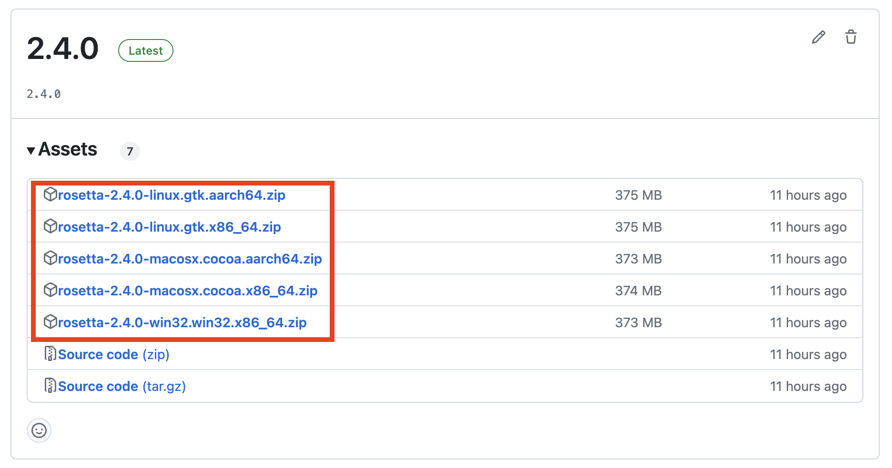
-
Unzip the archive to some folder on your local drive to get the Rosetta app.
Note: If you’re on a Mac, run this command in the terminal to get around the issue that the app is not yet signed (a temporary issue).
$xattr- cr< path/ to/ Rosetta. app> -
Navigate to the Rosetta app icon and double click to run it.

-
When prompted to choose a workspace, create a new one in your local file system.

Run OML Rosetta
-
Once Rosetta opens with the workspace, switch to the Modeling Perspective.
-
Once the Modeling Perspective opens, make some extra views visible.
-
This is how the Modeling Perspective should look like now.

Notice the following components of the Modeling Perspective above:
-
Model Explorer view (top-left): shows your project files hierarchy.
-
Properties view (bottom-right): shows detailed property sheet of the selection.
-
Problems view (bottom-right): shows problems (errors, warnings) with your projects.
-
Gradle Task view (bottom-right): shows the list of Gradle tasks in your projects.
-
Gradle Executions view (bottom-right): shows the details of execution of Gradle tasks.
-
Console view (bottom-right): shows messages printed by Gradle tasks.
-
Editors (top-right): this area shows the open editors (if any).
-
Outline view (bottom-left): shows the outline of content in the active editor.
-
Turn on the Show line number preference by navigating to the Preferences dialog in the main menu bar (on a Mac, you will find it under the
Rosettamenu; on Windows, you will find it under theWindowsmenu).
1. Tutorial 1: OML Basics
Note: If you have not already done so, please follow the Getting Ready instructions first before proceeding.
1.1. Learning Objectives
This tutorial provides a quick overview of the basic workflows of OML. Users will learn how to create an OML project, and within it, create a vocabulary for a simple domain (we use a Pizza domain since everyone is familiar with it), then use such vocabulary to describe knowledge (the pizzas sold by some pizza restaurant). Furthermore, users will learn how to build the project to check its logical consistency (e.g., vegetarian pizzas have no meat ingredients), and how to run queries on the described knowledge to answer business questions (e.g., how much ingredients were used? and how many vegan pizzas were sold?).Note: the source files created in this tutorial are available for reference in this repository, but we encourage the reader to recreate them by following the instructions below.
1.2. Create OML Project
-
Right click in the Model Explorer view and select New -> OML Project.
-
Enter the project name as
tutorial1. Press Next. -
Enter the project details as shown below. Press Finish.

-
The
tutorial1project should now be visible in the Model Explorer view.
Note: The project creation process may take a few seconds. Rosetta will show the progress of project creation in the status bar (bottom-right). Wait until this process finishes.
-
Expand the
tutorial1project node in the Model Explorer view as shown in the image below.
1.3. Create OML Vocabulary
Now, you will create a simple vocabulary for describing pizzas along with their bases and toppings. Different kinds of pizzas, bases, and toppings are modeled, along with their properties, interrelations, and restrictions.
-
Right click on the
tutorial1subfolder (highlighted in the picture above) in the Model Explorer view and select New -> OML Model. -
Enter the details of the
pizzavocabulary as shown below. Press Finish.
-
The
pizzavocabulary will be created and its OML editor opens as shown below.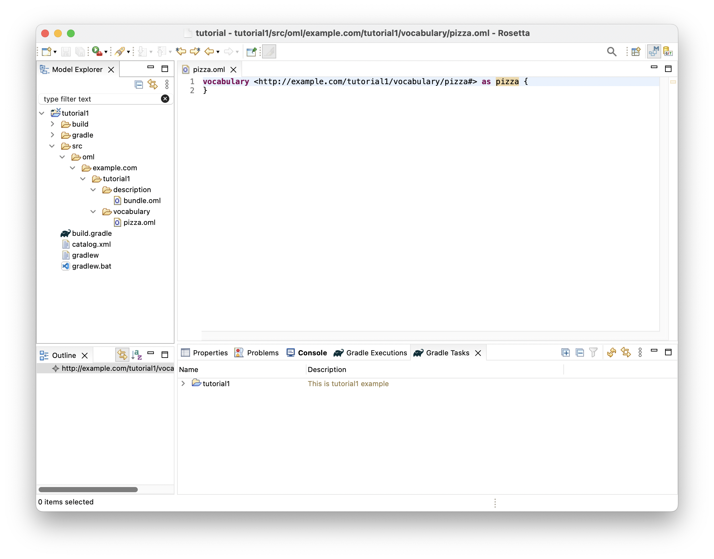
-
Copy the following OML code and paste it as the new content of vocabulary
pizza.
@dc : description "A vocabulary about pizzas" vocabulary < http : //example.com/tutorial1/vocabulary/pizza#> as pizza { extends < http : //www.w3.org/2001/XMLSchema#> as xsd extends < http : //purl.org/dc/elements/1.1/> as dc extends < http : //www.w3.org/2000/01/rdf-schema#> as rdfs // Top Level @rdfs : comment "The class of things that are uniquely identified by id" aspect IdentifiedThing [ key hasId ] @rdfs : comment "The id property of an identified thing" scalar property hasId [ domain IdentifiedThing range xsd : string functional ] // Identified Things @rdfs : comment "The class of food items" concept Food < IdentifiedThing @rdfs : comment "A relation from a food to another used as an ingredient" relation entity HasIngredient [ from Food to Food forward hasIngredient reverse isIngredientOf transitive ] @rdfs : comment "An enumeration of spiciness levels" scalar Spiciness [ oneOf "Hot" , "Medium" , "Mild" ] @rdfs : comment "The spiciness property of a food item" scalar property hasSpiceness [ domain Food range Spiciness functional ] // Foods @rdfs : comment "The class of pizzas" concept Pizza < Food [ restricts some hasBase to PizzaBase ] @rdfs : comment "The class of pizza bases" concept PizzaBase < Food @rdfs : comment "The class of pizza toppings" concept PizzaTopping < Food @rdfs : comment "A relation from a pizza to a base" relation entity HasBase [ from Pizza to PizzaBase forward hasBase reverse isBaseOf functional inverse functional ] < HasIngredient @rdfs : comment "A relation from a pizza to a topping" relation entity HasTopping [ from Pizza to PizzaTopping forward hasTopping reverse isToppingOf inverse functional ] < HasIngredient // Pizzas @rdfs : comment "The class of pizzas with some cheese toppings" concept CheesyPizza < Pizza [ restricts some hasTopping to CheeseTopping ] @rdfs : comment "The class of pizzas with some meat toppings" concept MeatyPizza < Pizza [ restricts some hasTopping to MeatTopping ] @rdfs : comment "The class of pizzas with all vegetarian toppings" concept VegetarianPizza < Pizza [ restricts all hasTopping to VegetarianTopping ] @rdfs : comment "The class of American pizzas" concept American < CheesyPizza , MeatyPizza [ restricts some hasTopping to MozzarellaTopping restricts some hasTopping to SausageTopping restricts some hasTopping to TomatoTopping ] @rdfs : comment "The class of Veneziana pizzas" concept Veneziana < CheesyPizza , MeatyPizza [ restricts some hasTopping to MozzarellaTopping restricts some hasTopping to TomatoTopping restricts some hasTopping to SultanaTopping ] @rdfs : comment "The class of Margherita pizzas" concept Margherita < CheesyPizza , VegetarianPizza [ restricts some hasTopping to MozzarellaTopping restricts some hasTopping to TomatoTopping ] // Pizza Bases @rdfs : comment "The class of deep pan bases" concept DeepPanBase < PizzaBase @rdfs : comment "The class of thin and crispy bases" concept ThinAndCrispyBase < PizzaBase // Pizza Toppings @rdfs : comment "The class of meat toppings" concept MeatTopping < PizzaTopping @rdfs : comment "The class of vegetarian toppings" concept VegetarianTopping < PizzaTopping @rdfs : comment "The class of hot spiciness toppings" concept HotTopping < PizzaTopping [ restricts hasSpiceness to "Hot" ] @rdfs : comment "The class of medium spiciness toppings" concept MediumTopping < PizzaTopping [ restricts hasSpiceness to "Medium" ] @rdfs : comment "The class of mild spiciness toppings" concept MildTopping < PizzaTopping [ restricts hasSpiceness to "Mild" ] // Meat Topping @rdfs : comment "The class sausage toppings" concept SausageTopping < MeatTopping , MildTopping @rdfs : comment "The class spiced beef toppings" concept SpicedBeefTopping < MeatTopping , HotTopping // Vegetarion Toppings @rdfs : comment "The class sauce toppings" concept SauceTopping < VegetarianTopping @rdfs : comment "The class cheese toppings" concept CheeseTopping < VegetarianTopping @rdfs : comment "The class fruit toppings" concept FruitTopping < VegetarianTopping @rdfs : comment "The class vegetable toppings" concept VegetableTopping < VegetarianTopping // Sauce Toppings @rdfs : comment "The class of tabasco toppings" concept TobascoTopping < SauceTopping , HotTopping // Cheese Toppings @rdfs : comment "The class of parmesan toppings" concept ParmesanTopping < CheeseTopping , MildTopping @rdfs : comment "The class of mozzarella toppings" concept MozzarellaTopping < CheeseTopping , MildTopping // Fruit Toppings @rdfs : comment "The class of sultana toppings" concept SultanaTopping < FruitTopping , MediumTopping // Vegetable Toppings @rdfs : comment "The class of pepper toppings" concept PepperTopping < VegetableTopping @rdfs : comment "The class of tomatoe toppings" concept TomatoTopping < VegetableTopping , MildTopping // Pepper Toppings @rdfs : comment "The class of jalapeno pepper toppings" concept JalapenoPepperTopping < PepperTopping , HotTopping @rdfs : comment "The class of sweet pepper toppings" concept SweetPepperTopping < PepperTopping , MildTopping }
1.4. Create OML Vocabulary Bundle
Now, you will create a vocabulary bundle to enable logical closed-world reasoning on pizzas described using the pizza vocabulary. This automatically asserts that classes in the bundled vocabularies that do not have common subtypes are disjoint (have no intersection), which helps detect a wide class of errors that would otherwise not get detected due to the open-world assumption (whatever is not asserted may be true or false).
-
Right click on the
vocabularysubfolder in the Model Explorer view and select New -> OML Model. -
Enter the details of the
pizza-bundlevocabulary bundle as shown below. Press Finish.
-
The
pizza-bundlevocabulary bundle will be created and its OML editor opens as shown below.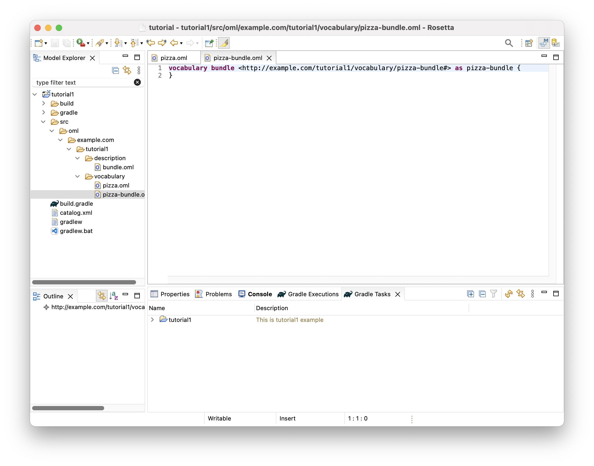
-
Copy the following OML code and paste it as the new content of the vocabulary bundle.
@dc : description "A vocabulary bundle for closed-world reasoning about pizzas" vocabulary bundle < http : //example.com/tutorial1/vocabulary/pizza-bundle#> as pizza-bundle { includes < http : //purl.org/dc/elements/1.1/> as dc // The pizza vocabulary bundle "includes" the pizza vocabulary includes < http : //example.com/tutorial1/vocabulary/pizza#> }
1.5. Create OML Description
Now, you will create a description of the pizza instances baked by a particular pizza restaurant. The description will be done using terms from the pizza vocabulary above.
-
Right click on the
descriptionsubfolder in the Model Explorer view and select New -> OML Model. -
Enter the details of the
restaurantdescription as shown below. Press Finish.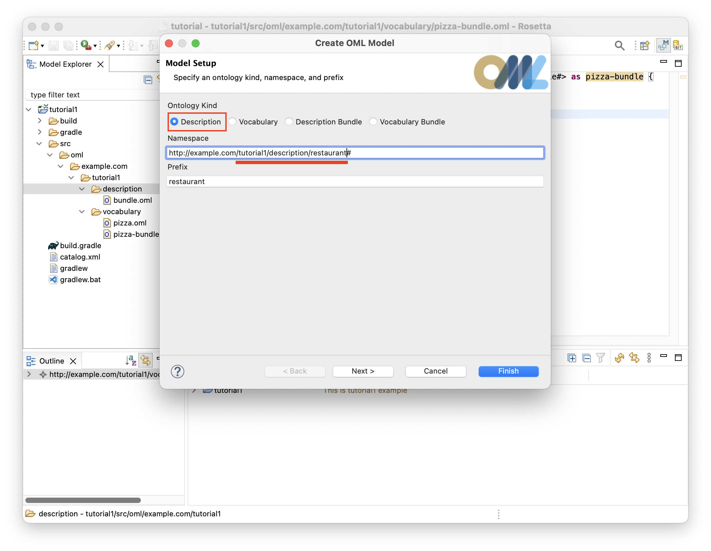
-
The
restaurantdescription will be created and its OML editor opens as shown below.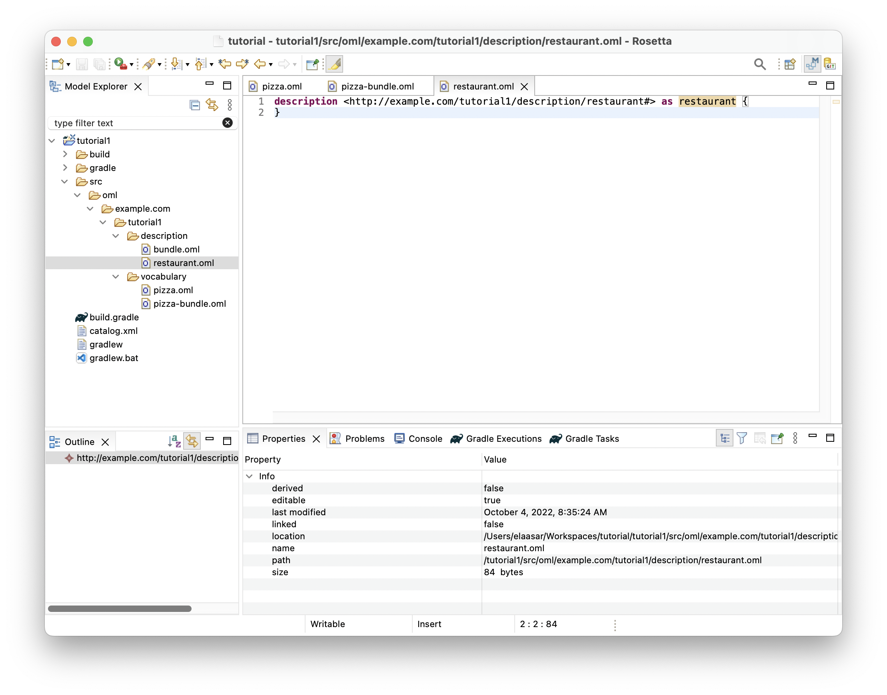
-
Copy the following OML code and paste it as the new content of the description.
@dc : description "A description of the sales of a specific pizza restaurant" description < http : //example.com/tutorial1/description/restaurant#> as restaurant { uses < http : //purl.org/dc/elements/1.1/> as dc // The restaurant description "uses" the pizza vocabulary terms in assertions uses < http : //example.com/tutorial1/vocabulary/pizza#> as pizza // Pizza 1 instance base1 : pizza : DeepPanBase instance topping1 - 1 : pizza : TomatoTopping instance topping1 - 2 : pizza : MozzarellaTopping instance topping1 - 3 : pizza : SausageTopping instance pizza1 : pizza : American [ pizza : hasId "1" pizza : hasBase base1 pizza : hasTopping topping1 - 1 pizza : hasTopping topping1 - 2 pizza : hasTopping topping1 - 3 ] // Pizza 2 instance base2 : pizza : ThinAndCrispyBase instance topping2 - 1 : pizza : TomatoTopping instance topping2 - 2 : pizza : MozzarellaTopping instance topping2 - 3 : pizza : SausageTopping instance pizza2 : pizza : American [ pizza : hasId "2" pizza : hasBase base2 pizza : hasTopping topping2 - 1 pizza : hasTopping topping2 - 2 pizza : hasTopping topping2 - 3 ] // Pizza 3 instance base3 : pizza : ThinAndCrispyBase instance topping3 - 1 : pizza : TomatoTopping instance topping3 - 2 : pizza : MozzarellaTopping instance pizza3 : pizza : Margherita [ pizza : hasId "3" pizza : hasBase base3 pizza : hasTopping topping3 - 1 pizza : hasTopping topping3 - 2 ] // Pizza 4 instance base4 : pizza : ThinAndCrispyBase instance topping4 - 1 : pizza : TomatoTopping instance topping4 - 2 : pizza : MozzarellaTopping instance topping4 - 3 : pizza : SultanaTopping instance topping4 - 4 : pizza : SpicedBeefTopping instance pizza4 : pizza : Veneziana [ pizza : hasId "4" pizza : hasBase base4 pizza : hasTopping topping4 - 1 pizza : hasTopping topping4 - 2 pizza : hasTopping topping4 - 3 pizza : hasTopping topping4 - 4 ] // Pizza 5 instance base5 : pizza : DeepPanBase instance topping5 - 1 : pizza : TobascoTopping instance topping5 - 2 : pizza : ParmesanTopping instance topping5 - 3 : pizza : JalapenoPepperTopping instance pizza5 : pizza : VegetarianPizza [ pizza : hasId "5" pizza : hasBase base5 pizza : hasTopping topping5 - 1 pizza : hasTopping topping5 - 2 pizza : hasTopping topping5 - 3 ] // Pizza 6 instance base6 : pizza : DeepPanBase instance topping6 - 1 : pizza : TomatoTopping instance topping6 - 2 : pizza : JalapenoPepperTopping instance pizza6 : pizza : VegetarianPizza [ pizza : hasId "6" pizza : hasBase base6 pizza : hasTopping topping6 - 1 pizza : hasTopping topping6 - 1 ] }
1.6. Edit OML Description Bundle
Now, you will include the restaurant description in a description bundle that will be analyzed as a dataset with closed-world assumptions. This requires the description bundle to use the pizza vocabulary bundle above in order to reuse its closed world assumptions. Additionally, it automatically asserts that instances in the bundled descriptions are the only ones available in the world.
-
Double-click on the
description/bundle.omlfile in the Model Explorer view to open the editor (if not already open).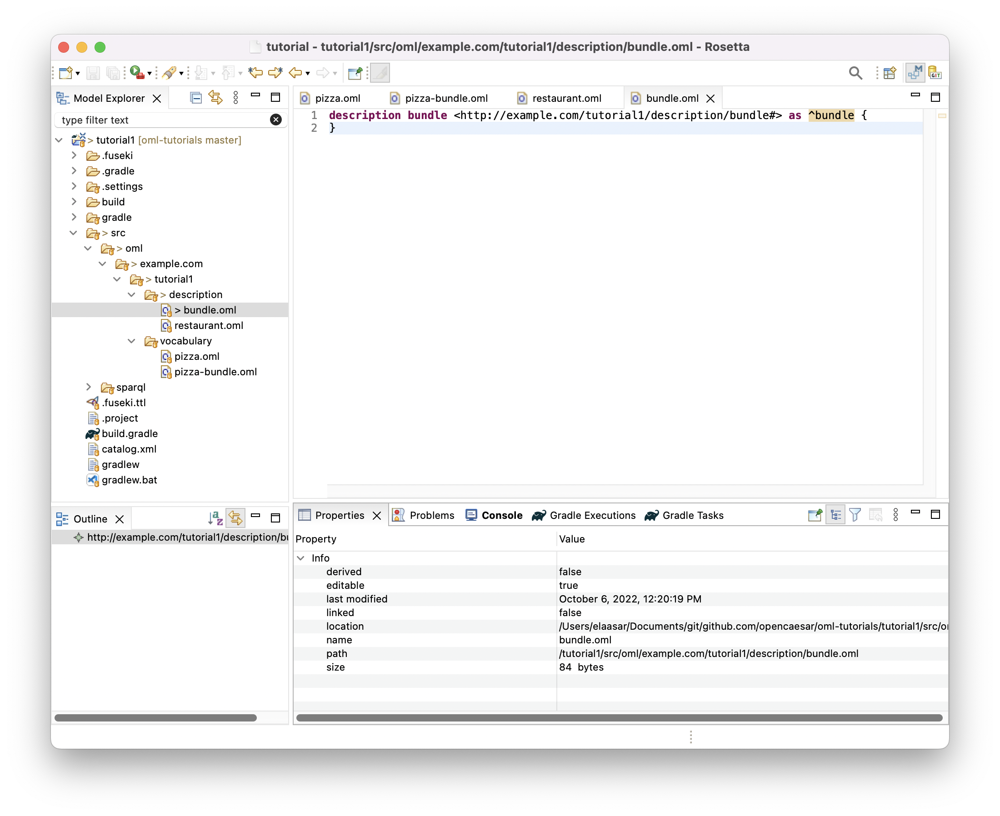
-
Copy the following OML code and paste it as the new content of description bundle.
@dc : description "A description bundle for closed-world reasoning about a restaurant" description bundle < http : //example.com/tutorial1/description/bundle#> as ^bundle { uses < http : //purl.org/dc/elements/1.1/> as dc // The description bundle "uses" the vocabulary bundle world closure axioms uses < http : //example.com/tutorial1/vocabulary/pizza-bundle#> // The description bundle "includes" the restaurant description includes < http : //example.com/tutorial1/description/restaurant#> }
1.7. Run Build Task
Now, it is time to run the Gradle build task of the project to verify whether the description bundle is logically consistent (and uses vocabulary bundles that have satisfiable classes). The OML code we have so far should pass this test.
-
Click on the Gradle Task view and wait until the
tutorial1project shows up there (keep an eye on the loading message in the status bar bottom-right).
-
Expand the
tutorial1node followed by expanding theomlnode. -
Double-click on the
buildtask and wait for it to finish running in the Gradle Executions view.
-
Inspect the build status in the Gradle Executions view and notice that it is all green icons.

1.8. Fix Logical Inconsistency
Now, we will introduce a logical problem in the OML code above and see how the reasoner helps us detect it and explain it.
Introducing a problem
-
Click on the
restaurant.omleditor to bring it in focus. -
In line 30, change the
hasIdproperty value of instancepizza2to "1" (from "2"), to become like the value ofhasIdof instancepizza1(in line 16). Save the editor.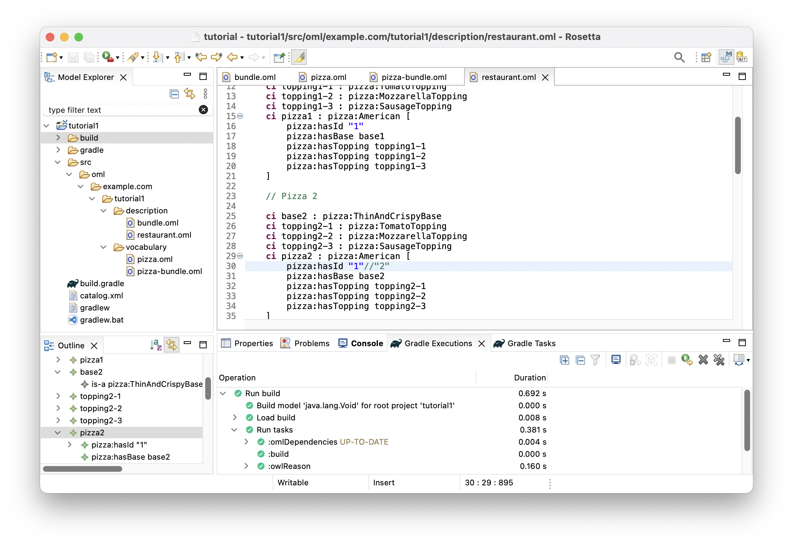
-
In the Gradle Task view double-click to rerun task
tutorial1/oml/buildagain, and wait for it to finish running in the Gradle Executions view. -
Inspect the build status in the Gradle Executions view and notice that it now shows a failure (red icons) on task
owlReason.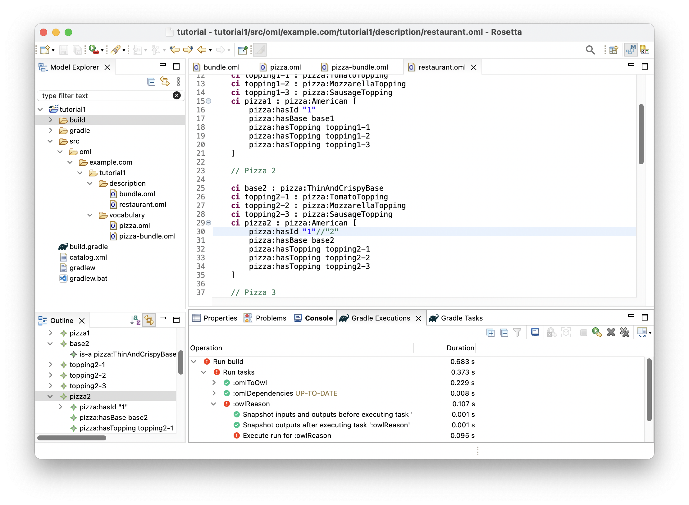
-
Right click on the
Execute run for :owlReasonred icon and selectShow Failuresfrom the context menu. The follow dialog shows up saying that some "Ontology is inconsistent. Check tutorial1/build/reports/reasoning.xml for more details". Click Close button.
-
In the Model Explorer view, right click on the
tutorial1project and choose Refresh. Then, navigate to fileorial1/build/reports/reasoning.xmland double click on it. The file opens in theJunitview showing the problem as an inconsistency (on the left) and providing an explanation for it (on the right).
Explaining the problem
This problem demonstrates why it is useful to use a logical reasoner to detect inconsistencies that may otherwise be non-obvious or unexpected. When this occurs, the reasoner provides a brief description and a minimal ontology that demonstrates the problem.
In this case, the brief description is "an individual belongs to a type and its complement". This means there exists an individual (called an instance in OML) in the model that can be inferred, using the logical semantics of the used vocabulary, to be classified by two classes that are disjoint (i.e., do not have an intersection, or in other words are a complement of each other, hence cannot be types of the same instance).
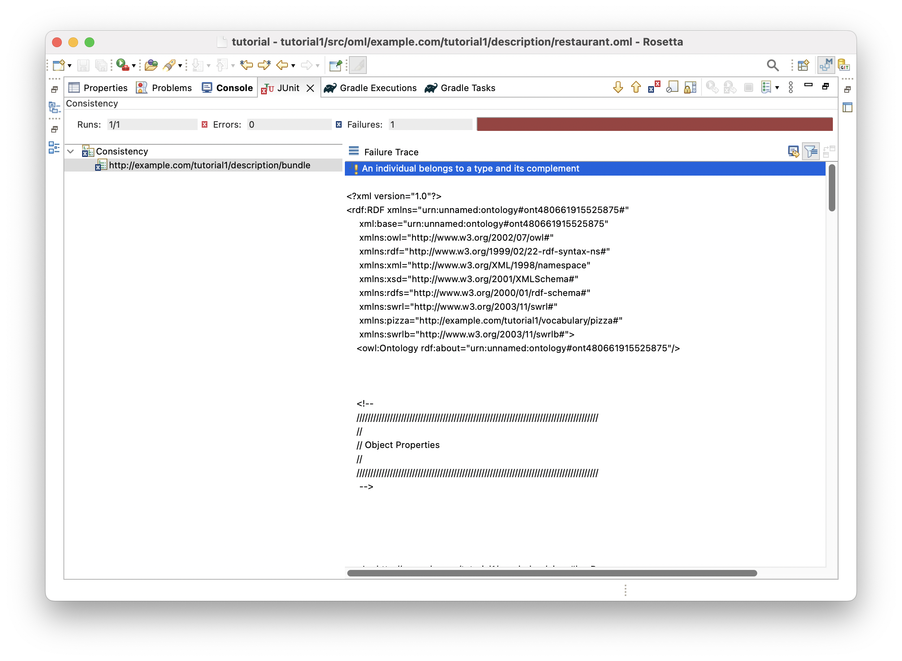
Looking at the minimal ontology presented, we can figure out the cause of the problem. It says that relation hasBase is functional, meaning that it can have maximum one value for a given instance. Looking at the relevant snippet of the pizza vocabulary confirms that.
@rdfs : comment "A relation from a pizza to a base" relation entity HasBase [ from Pizza to PizzaBase forward hasBase reverse isBaseOf functional inverse functional ] < HasIngredient
Moreover, it says that instance base1 is a value of property hasBase on instance pizza1, and instance base2 is a value of property hasBase on instance pizza2. Looking at the relevant snippet of the restaurant description confirms that.
instance base1 : pizza : DeepPanBase instance pizza1 : pizza : American [ pizza : hasId "1" pizza : hasBase base1 ] instance base2 : pizza : ThinAndCrispyBase instance pizza2 : pizza : American [ pizza : hasId "1" pizza : hasBase base2 ]
So far so good, where is the issue then?
The explanation highlights that pizza1 and pizza2 have the same value ("1") of property hasId, which is defined by the pizza vocabulary to be functional (can have a maximum one value per instance). It infers from this that pizza1 and pizza2 are two names of a single pizza instance.
scalar property hasId [ domain IdentifiedThing range xsd : string functional ]
In light of the above, and having established previously that property hasBase is functional, it follows logically that base1 and base2 must be two names of the same base individual. But wait, we asserted in the restaurant description that those instances are typed by concepts DeepPanBase and ThinAndCrispyBase, respectively. This means now that the same base instance is typed by both these types.
However, the explanation also says that these two types are in fact disjoint. Where did it get this from? It turns out to be a generated assertion in the pizza-bundle vocabulary bundle. Such assertion is generated since the two types do not have a common subtype in the pizza vocabulary (included in the vocabulary bundle). Such closed-world semantics is a benefit of using a vocabulary bundle.
Now, let us put all those inferences together to understand the reported problem "an individual belongs to a type and its complement". It turns out that the individual here is known by the two names base1 and base2 and it is inferred to belong to type DeepPanBase and its complement type ThinAndCrispyBase, which is a logical inconsistency.
Fixing the problem
-
Let’s now fix the problem by reverting the change we just did. Click on the
restauranteditor again and navigate to line 30 and restore the originalhasIdproperty value ofpizza2to "2". Save the editor. -
Click on the Gradle Task view and double-click to rerun the
tutorial1/oml/buildtask again and wait for it to finish running in the Gradle Executions view. -
Inspect the build status in the Gradle Executions view and notice that it is back to showing green icons.
1.9. Run Query Task
Now that the model is consistent, it is time to get some value out of it by using it to answer business questions. To do that, we will run some queries in SPARQL on the model and inspect their results.
-
Navigate in the Model Explorer view to the
srcfolder, and right click on it and choose New -> Folder.
-
Enter the name of the folder as
sparqland press Finish. This creates a new foldersrc/sparqlin the Model Explorer view.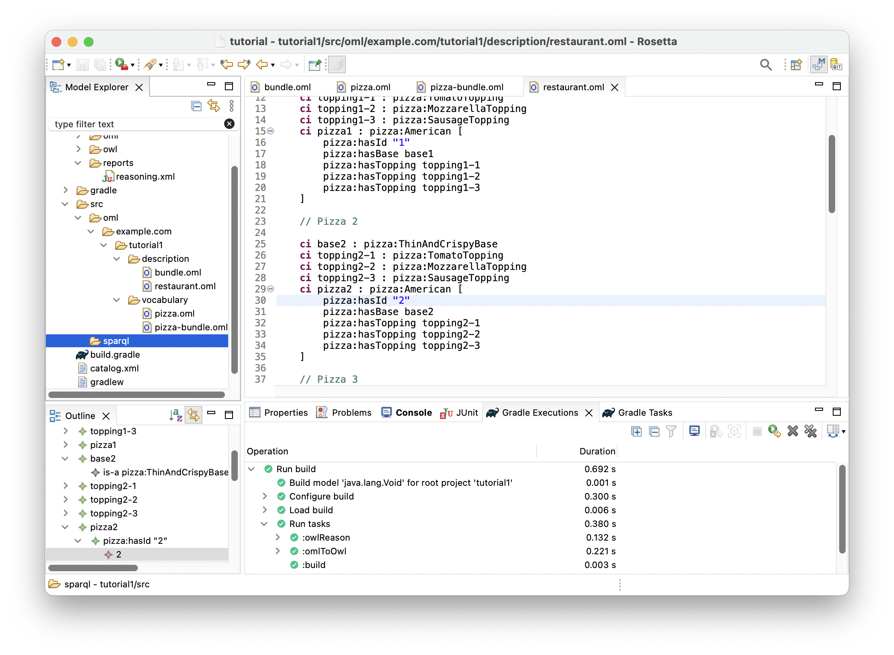
-
Right click on the
src/sparqlfolder in the Model Explorer view and select New -> File.
-
Enter the name of the file as
NumberOfToppings.sparqland press Finish. This creates a new file under thesparqlfolder in the Model Explorer view. -
Paste the following SPARQL code as the content of the file editor and save it.
PREFIX pizza : < http : //example.com/tutorial1/vocabulary/pizza#> PREFIX rdfs : < http : //www.w3.org/2000/01/rdf-schema#> SELECT ? toppingKind ( COUNT ( ? topping ) as ? toppingCount ) WHERE { ? r pizza : hasTopping ? topping . ? topping a ? toppingKind . ? toppingKind rdfs : subClassOf pizza : PizzaTopping . } GROUP BY ? toppingKind
-
Repeat the previous steps to create a second query file called
WhichPizzaIsSpicy.sparqland this time use the following SPARQL code.
PREFIX pizza : < http : //example.com/tutorial1/vocabulary/pizza#> PREFIX rdfs : < http : //www.w3.org/2000/01/rdf-schema#> SELECT DISTINCT ? pizza WHERE { ? pizza pizza : hasTopping [ pizza : hasSpiceness "Hot" ] }
-
Repeat the previous steps to create a third query file called
WhichPizzaIsVegan.sparqland this time use the following SPARQL code.
PREFIX pizza : < http : //example.com/tutorial1/vocabulary/pizza#> PREFIX rdfs : < http : //www.w3.org/2000/01/rdf-schema#> SELECT DISTINCT ? pizza WHERE { ? pizza a pizza : Pizza . FILTER NOT EXISTS { ? pizza pizza : hasTopping ? nvt . FILTER NOT EXISTS { ? nvt a pizza : VegetableTopping } } }
-
By now, you should see the following in the Model Explorer view.

-
Before we can run the queries, we need to have a database server with a query endpoint running. To do that, click on the Gradle Task view and navigate to the task
tutorial1/oml/startFuseki. Double click the task and wait for it to finish running in the Gradle Executions view.
Note: A Fuseki server should now be running locally on your machine.
-
In the Gradle Task view, navigate to the task
tutorial1/oml/owlQueryand double click to run it and wait for it to finish running in the Gradle Executions view. This task first loads the description bundle to the Fuseki server, then runs on it all the queries from thesparqlfolder. -
In the Model Explorer view, right click on the
tutorial1project and choose Refresh. Then, navigate to folderbuild/resultsto see the JSON files resulting from running the queries. Each one is named after one query.
-
Double click on file
NumberOfToppings.jsonin the Model Explorer view to open its editor.
This query returned a table of two columns. The first column named
toppingKindrepresents the unique topping kinds (identified by their IRIs) that were used by the restaurant in making pizzas. The second column namedtoppingCountrepresents the total count of each topping kind that were used to make those pizzas.
-
Double click on file
WhichPizzaIsSpicy.jsonin the Model Explorer view to open its editor.
This query returned a table of one column named
pizzawhich represents the pizzas (identified by their IRIs) that were considered spicy because the spiciness of one of their toppings was Hot.
-
Double click on file
WhichPizzaIsVegan.jsonin the Model Explorer view to open its editor.
This query returned a table of one column named
pizzawhich represents the pizzas (identified by their IRIs) that were considered vegan because none their toppings were non-vegetable.
-
Now that we are done running queries, we can stop the Fuseki server by navigating to task
tutorial1/oml/stopFusekiin the Gradle Task view. Double click to run the task and wait for it to finish running in the Gradle Executions view.
Note: This kills the Fuseki server process running on your machine.
1.10. Summary
This tutorial introduced the OML language, its Rosetta workbench, and its main modeling and analysis workflows. It demonstrated how OML can be used to define a semantic business vocabulary (pizza in this case) that can be used to describe knowledge (the pizzas made by a restaurant in this case), check its consistency and generate inferences with the help of a logical reasoner, and write queries to answer business questions. It also demonstrated how the Rosetta workbench can be used to author OML ontologies and run and inspect the results of analysis tasks (developed in Gradle), like the build task that invokes a logical reasoner, the startFusei and stopFuseki tasks to start/stop the Fuseki server, and the owlQuery task that runs SPARQL queries on the model.
2. Tutorial 2: OML Patterns
Note: This tutorial builds on Tutorial 1. Please do that first before proceeding.
2.1. Learning Objectives
This tutorial demonstrates the process of developing a methodology for capturing knowledge in a given business domain with OML. The methodology will be developed as a series of patterns, each of which represents a small step in the methodology and is encoded by some new vocabulary. As an example, we will develop a simple systems engineering methodology. The tutorial also demonstrates describing knowledge using instances of those patterns and organizing them into modules that capture related concerns. As an example, we will describe a fanciful space mission called Kepler16b, which is an exoplanet orbiting a binary star system called Kepler16—approximately 245 light-years from Earth.Note: the source files created in this tutorial are available for reference in this repository, but we encourage the reader to recreate them by following the instructions below.
2.2. Create OML Project
We will start by creating an OML project that has a vocabulary bundle and a description bundle that uses it.
-
In the [=Model Explorer view], right click and choose New -> OML Project.
-
Name the project
tutorial2. Click Next. -
Fill the OML project details as seen below. Click Finish.

-
In the Model Explorer view, double click on the
build.gradlefile, and modify the declared dependency oncore-vocabularytometrology-vocabularyinstead. Save the editor.
-
In the Model Explorer view, expand the
tutorial2project, right-click on thesrc/oml/example.com/tutorial2folder, choose New -> OML Model and fill the OML model details as shown below. Click Finish.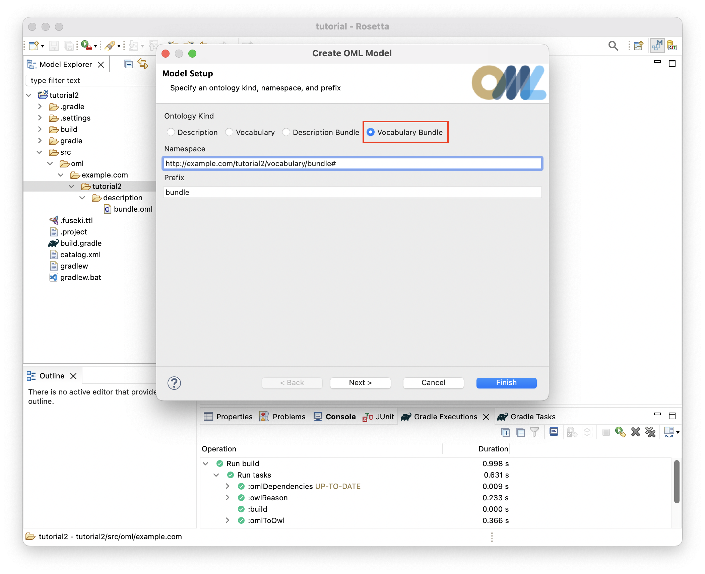
-
In the Model Explorer view, double click on the file
src/oml/example.com/tutorial2/description/bundle.omlto open its editor. Paste the following OML code as the contents of the file.
description bundle < http : //example.com/tutorial2/description/bundle#> as ^bundle { uses < http : //example.com/tutorial2/vocabulary/bundle#> }
Note: since we be running SPARQL queries for every pattern, we will run a Fuseki server once now, and keep it running till the end of the tutorial when we will stop it.
-
From the Gradle Task view, run the task
tutorial2/oml/startFusekiand wait until it finishes execution in the Gradle Executions view. It should run successfully with no errors.
Note: you should now be ready to create the patterns below. For each pattern, we give its synopsis, the new vocabulary required to support it, the new descriptions to use it, and finally the queries that we can analyze it.
2.3. P1: Objective aggregates Objective
Pattern Synopsis
A systems engineering endeavor begins with objectives to be achieved. Objectives are not requirements; they are desires. They may be in conflict. They may not be achievable in principle. They may not be feasible. They may be related such that achieving one objective helps to achieve another. We call this relationship aggregates, which could be important for planning a campaign of pursuit. Aggregates is a general relationship, broader than objectives, but is homomeric, meaning that parts and whole are of the same type. We say an Objective is an AggregatedThing, meaning it can aggregate or be aggregated. We further say an Objective aggregates only Objectives and is aggregated in only Objectives (this is called a restriction in OML).
New Vocabulary
We will create two vocabularies and add them to the vocabulary bundle. The first vocabulary is called base, which we will use to define basic patterns, and the second is called mission, which we will use to describe patterns related to missions in systems engineering. We will then add to them the details of pattern P1.
-
Create a vocabulary with the IRI <
http://example.com/tutorial2/vocabulary/base#> and prefixbase. Copy the following OML code as its contents. Save the editor.
vocabulary < http : //example.com/tutorial2/vocabulary/base#> as base { extends < http : //www.w3.org/2000/01/rdf-schema#> as rdfs extends < http : //www.w3.org/2001/XMLSchema#> as xsd }
-
Create a vocabulary with the IRI <
http://example.com/tutorial2/vocabulary/mission#> and prefixmission. Copy the following OML code as its contents. Save the editor.
vocabulary < http : //example.com/tutorial2/vocabulary/mission#> as mission { extends < http : //www.w3.org/2000/01/rdf-schema#> as rdfs extends < http : //example.com/tutorial2/vocabulary/base#> as base }
-
Open the
vocabulary/bundleeditor, Copy the follow OML code as its contents. Save the editor.
vocabulary bundle < http : //example.com/tutorial2/vocabulary/bundle#> as ^bundle { includes < http : //example.com/tutorial2/vocabulary/mission#> }
Note: how we only added the mission vocabulary, not the base vocabulary, to the bundle. This is because in OML, import statements (like includes, extends, and uses) are transitive. Since mission already imports (extends) base, the bundle would transitively include base as well. But It would not be wrong to explicitly include base in the bundle too.
-
if you did all the previous steps correctly, the following should be the contents of all files so far.
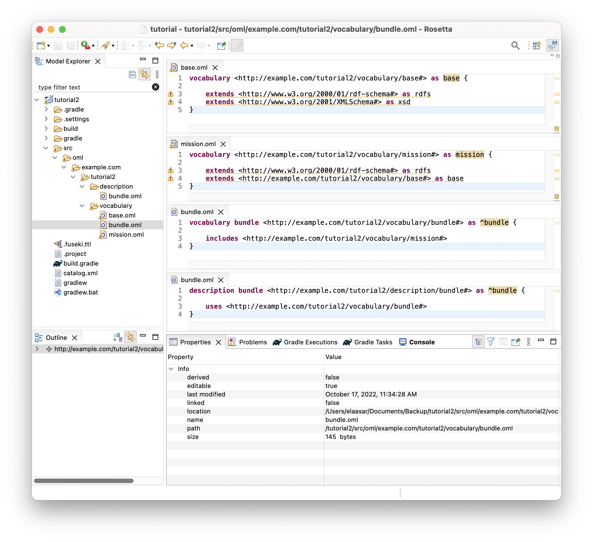
-
In the
vocabulary/baseontology, append the following OML code to its body (i.e., insert it before the closing}bracket):
@rdfs : comment "The class of things having an id and a canonical name" aspect IdentifiedThing [ key hasIdentifier ] @rdfs : comment "The has canonical name property" scalar property hasCanonicalName [ domain IdentifiedThing range xsd : string ] @rdfs : comment "The has identifier property" scalar property hasIdentifier [ domain IdentifiedThing range xsd : string functional ] @rdfs : comment "The has description property" scalar property hasDescription [ domain IdentifiedThing range xsd : string ] @rdfs : comment "The class of things that can be aggregated" aspect AggregatedThing @rdfs : comment "The aggregates relation between aggregated things" relation entity Aggregates [ from AggregatedThing to AggregatedThing forward aggregates reverse isAggregatedIn asymmetric irreflexive ]
Note: the syntax used for annotations on ontology members above (e.g., @rdfs:comment "value" used to put a comment on a vocabulary member). What comes after the @ is the IRI of an annotation property (declared in some vocabulary) followed by a (literal or IRI) value.
Note: the key axiom in the IdentifiedThing aspect. It says that instances of this type must have unique values for their hasIdentifier property (which is similar to the concept of primary key in relational schemas). For this to work as expected, properties that are part of a key needs to be defined as functional, meaning that may have a maximum of one value. Otherwise, two instances with different values for hasIdentifier may still be inferred as aliases to the same instance with twos values for the key property.
-
In the
vocabulary/missionontology, append the following OML code to its body:
@rdfs : comment "An Objective represents a specific interest that one or more stakeholders have in the successful execution of a mission." concept Objective < base : IdentifiedThing , base : AggregatedThing [ restricts all base : aggregates to Objective restricts all base : isAggregatedIn to Objective ]
-
This is a visualization of the vocabularies you created so far.


Base Vocabulary Mission Vocabulary -
Let us check that our ontologies are good so far, by running the task
tutorial2/oml/buildfrom the Gradle Task view, and waiting for it to finish running in the Gradle Executions view. This should run with no errors.
New Description
We will now create a new description model for the objectives of the Kepler16 mission, then add it to the description bundle. Each description is identified with an id and a canonical name and may specify which other objective it aggregates.
-
Create a description with the IRI <
http://example.com/tutorial2/description/objectives#> and prefixobjectives. Copy the following OML code as its contents. Save the editor.
description < http : //example.com/tutorial2/description/objectives#> as objectives { uses < http : //example.com/tutorial2/vocabulary/base#> as base uses < http : //example.com/tutorial2/vocabulary/mission#> as mission instance characterize - atmosphere : mission : Objective [ base : hasIdentifier "O.01" base : hasCanonicalName "Characterize the atmosphere of Kepler 16b" base : aggregates characterize - liquid - ocean ] instance characterize - liquid - ocean : mission : Objective [ base : hasIdentifier "O.02" base : hasCanonicalName "Characterize the liquid ocean of Kepler 16b" ] instance characterize - gravitational - field : mission : Objective [ base : hasIdentifier "O.03" base : hasCanonicalName "Characterize the gravitational field of Kepler 16b" base : aggregates characterize - liquid - ocean base : aggregates characterize - rocky - core ] instance characterize - rocky - core : mission : Objective [ base : hasIdentifier "O.04" base : hasCanonicalName "Characterize the rocky core of Kepler 16b" base : aggregates characterize - rocky - core - density base : aggregates characterize - rocky - core - shape ] instance characterize - rocky - core - density : mission : Objective [ base : hasIdentifier "O.05" base : hasCanonicalName "Characterize the core density of Kepler 16b" ] instance characterize - rocky - core - shape : mission : Objective [ base : hasIdentifier "O.06" base : hasCanonicalName "Characterize the core shape of Kepler 16b" ] instance characterize - environment : mission : Objective [ base : hasIdentifier "O.07" base : hasCanonicalName "Characterize the energetic particule environment of the Kepler 16b binary star system" base : aggregates characterize - liquid - ocean ] }
-
This is a visualization of the descriptions you created so far.
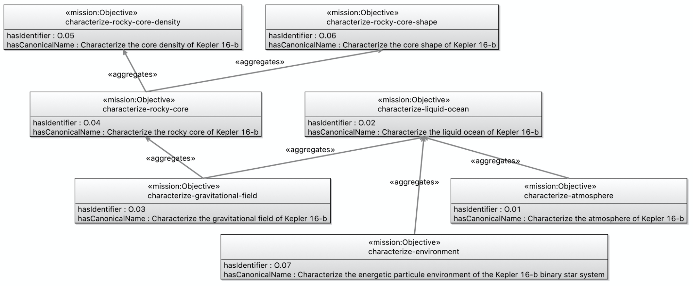 Objectives Desrciption -
Open the
description/bundleeditor, Append the follow OML code to the body. Save the editor.
includes < http : //example.com/tutorial2/description/objectives#> -
Let us check that our ontologies are still good, by running the task
tutorial2/oml/buildfrom the Gradle Task view, and waiting for it to finish running in the Gradle Executions view. This should run with no errors.
New Queries
Now that we have defined the vocabulary of the first pattern, and used it in the mission description, we will create a SPARQL query to extract the pattern instances from the description.
-
Create the file
src/sparql/objectives.sparqland copy the following SPARQL code as its content. It looks for objectives in the model and selects their ids and names.
PREFIX base : < http : //example.com/tutorial2/vocabulary/base#> PREFIX mission : < http : //example.com/tutorial2/vocabulary/mission#> SELECT DISTINCT ? o1_id ? o1_name ? o2_id ? o2_name WHERE { ? o1 a mission : Objective ; base : hasIdentifier ? o1_id ; base : hasCanonicalName ? o1_name ; base : aggregates [ base : hasIdentifier ? o2_id ; base : hasCanonicalName ? o2_name ] } ORDER BY ? o1_id ? o2_id
-
Let’s now run this query by running the task
tutorial2/oml/owlQueryfrom the Gradle Task view and waiting for it to finish execution in the Gradle Executions view. It should run with no errors. -
Right click on the project in the Model Explorer view and select
Refresh. Navigate to the filebuild/results/objectives.jsonand double click it to open its editor. You should see the following results in JSON.
-
With this JSON results, one could develop a visualization like the following:
Note: the visualization code is not part of this tutorial
| o1_id | o1_name | o2_id | o2_name |
|---|---|---|---|
| O.01 | Characterize the atmosphere of Kepler 16b | O.02 | Characterize the liquid ocean of Kepler 16b |
| O.03 | Characterize the gravitational field of Kepler 16b | O.02 | Characterize the liquid ocean of Kepler 16b |
| O.03 | Characterize the gravitational field of Kepler 16b | O.04 | Characterize the rocky core of Kepler 16b |
| O.04 | Characterize the rocky core of Kepler 16b | O.05 | Characterize the core density of Kepler 16b |
| O.04 | Characterize the rocky core of Kepler 16b | O.06 | Characterize the core shape of Kepler 16b |
| O.07 | Characterize the energetic particule environment of the Kepler 16b binary star system | O.02 | Characterize the liquid ocean of Kepler 16b |
2.4. P2: Mission pursues Objective
Pattern Synopsis
We undertake missions to pursue objectives. Again, objectives are not requirements. Part of the job of a mission is to negotiate an achievable set of objectives. Every mission pursues zero or more objectives. The lower bound is zero in the vocabulary because one-or-more is really a life-cycle completeness constraint. The notion of mission makes sense even if we don’t know what its objectives are. Every objective may be pursued by zero or more missions.
New Vocabulary
-
In the body of ontology
vocabulary/mission, append the following OML code, which adds the concept of aMissionwith relation entityPurses, after the existing concept ofObjective. Save the editor.
@rdfs : comment "A Mission pursues Objectives." concept Mission < base : IdentifiedThing @rdfs : comment "A Mission pursues zero or more Objectives." relation entity Pursues [ from Mission to Objective forward pursues reverse isPursuedBy asymmetric irreflexive ]
Note: that relation entity Purses is a reified relation (i.e., a class of relation instances), where its forward purses and its reverse isPursedBy are unreified relations (i.e., simple references). In a description model, either a reified or an unreified version of the relation can be used. The former is useful when it is desired to give the link a name and other characterizations.
Note: the semantic (logical) flags specified on the relation entity Pursues. The first flag reverse functional means that an Objective (the target of the relation) can be pursued by a max of one Mission (the source of the relation). The second flag asymmetric means that if a mission pursues an objective, then it would be illogical to infer that the objective pursues the mission (remember with open world assumptions, anything can be inferred unless you state otherwise). The third flag irreflexive means that an instance cannot be related to itself by this relation.
-
The following is a visualization of the
missionvocabulary so far:
-
Let us check that our ontologies are good so far, by running the task
tutorial2/oml/buildfrom the Gradle Task view, and waiting for it to finish running in the Gradle Executions view. This should run with no errors.
New Description
Let us now use the pattern in describing a couple of missions in kepler6b.
-
Create a description with the IRI <
http://example.com/tutorial2/description/missions#> and prefixmissions. Copy the following OML code as its contents. Save the editor.
description < http : //example.com/tutorial2/description/missions#> as missions { uses < http : //example.com/tutorial2/vocabulary/base#> as base uses < http : //example.com/tutorial2/vocabulary/mission#> as mission extends < http : //example.com/tutorial2/description/objectives#> as objectives instance orbiter : mission : Mission [ base : hasIdentifier "M.01" base : hasCanonicalName "Orbiter Mission" mission : pursues objectives : characterize - atmosphere mission : pursues objectives : characterize - environment mission : pursues objectives : characterize - gravitational - field ] instance lander : mission : Mission [ base : hasIdentifier "M.02" base : hasCanonicalName "Lander Mission" mission : pursues objectives : characterize - atmosphere mission : pursues objectives : characterize - environment ] }
-
The following is a visualization of the
missionsdescription we just created.
-
Append the following OML code to the body of
description/bundleto include the newmissionsontology. Save the editor.
includes < http : //example.com/tutorial2/description/missions#> -
Let us check that our ontologies are good so far, by running the task
tutorial2/oml/buildfrom the Gradle Task view, and waiting for it to finish running in the Gradle Executions view. This should run with no errors.
New Queries
Now we will create a SPARQL query to extract the pattern instances from the description.
-
Creat the file
src/sparql/missions.sparqland copy the following SPARQL code as its content. It looks for missions that purses objectives.
PREFIX base : < http : //example.com/tutorial2/vocabulary/base#> PREFIX mission : < http : //example.com/tutorial2/vocabulary/mission#> SELECT DISTINCT ? m_id ? m_name ? o_id ? o_name WHERE { ? m a mission : Mission ; base : hasIdentifier ? m_id ; base : hasCanonicalName ? m_name ; mission : pursues [ a mission : Objective ; base : hasIdentifier ? o_id ; base : hasCanonicalName ? o_name ] } ORDER BY ? m_id ? o_id
-
Let’s now run this query by running the task
tutorial2/oml/owlQueryfrom the Gradle Task view and waiting for it to finish execution in the Gradle Executions view. It should run with no errors. -
Right click on the project in the Model Explorer view and select
Refresh. Navigate to the filebuild/results/missions.jsonand double click it to open its editor. You should see the following results in JSON.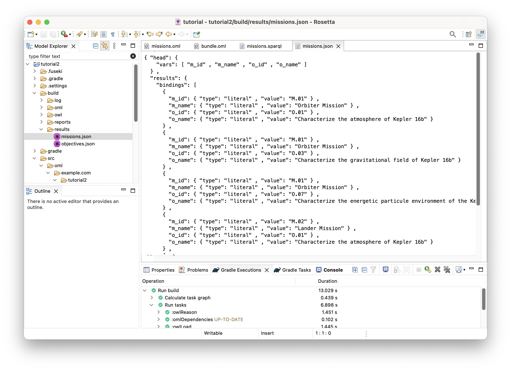
-
With this JSON results, one could develop visualizations like the following:
Note: the visualization code is not part of this tutorial
2.5. P3: Mission deploys Component
Pattern Synopsis
We say a mission deploys components, which are typically the major systems of the mission. In our case, these are Launch System, Spacecraft, etc. Deploys is a whole-part relationship, but allows more than one mission to deploy the same component, as in for example, a shared mission operates a system for coordinated ops.
New Vocabularies
-
Append the following OML code, which adds the concept of a
Componentwith the relationDeploysto the body of themissionvocabulary. Save the editor.
@rdfs : comment "A Component is something that can be deployed in a mission." concept Component < base : IdentifiedThing @rdfs : comment "A Mission deploys zero or more Components." relation entity Deploys [ from Mission to Component forward deploys reverse isDeployedBy asymmetric irreflexive ]
-
The following is a visualization of the
missionvocabulary so far: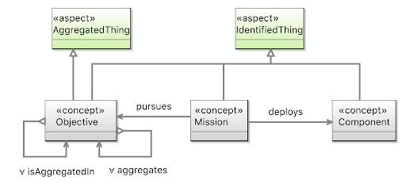
-
Let us check that our ontologies are good so far, by running the task
tutorial2/oml/buildfrom the Gradle Task view, and waiting for it to finish running in the Gradle Executions view. This should run with no errors.
New Descriptions
We will now add more details to the missions description using the pattern above. Specifically, we will add components and specify that the mission deploys some of them (the roots of component containment as shown in pattern P4 later).
-
Create a description with the IRI <
http://example.com/tutorial2/description/components#> and prefixcomponents. Copy the following OML code as its contents. Save the editor.
description < http : //example.com/tutorial2/description/components#> as components { uses < http : //example.com/tutorial2/vocabulary/base#> as base uses < http : //example.com/tutorial2/vocabulary/mission#> as mission instance orbiter - launch - system : mission : Component [ base : hasIdentifier "C.01" base : hasCanonicalName "Orbiter Launch System" ] instance orbiter - spacecraft : mission : Component [ base : hasIdentifier "C.02" base : hasCanonicalName "Orbiter Spacecraft" ] instance orbiter - power - subsystem : mission : Component [ base : hasIdentifier "C.02.01" base : hasCanonicalName "Orbiter Power Subsystem" ] instance orbiter - harness : mission : Component [ base : hasIdentifier "C.02.02" base : hasCanonicalName "Orbiter Harness" ] instance orbiter - thermal - subsystem : mission : Component [ base : hasIdentifier "C.02.03" base : hasCanonicalName "Orbiter Thermal Subsystem" ] instance orbiter - command - and - data - handling - subsystem : mission : Component [ base : hasIdentifier "C.02.04" base : hasCanonicalName "Orbiter C&DH Subsystem" ] instance orbiter - telecom - subsystem : mission : Component [ base : hasIdentifier "C.02.05" base : hasCanonicalName "Orbiter Telecom Subsystem" ] instance orbiter - guidance - navigation - control - subsystem : mission : Component [ base : hasIdentifier "C.02.06" base : hasCanonicalName "Orbiter GN&C Subsystem" ] instance orbiter - mechanical - subsystem : mission : Component [ base : hasIdentifier "C.02.07" base : hasCanonicalName "Orbiter Mechanical Subsystem" ] instance orbiter - spacraft - flight - software : mission : Component [ base : hasIdentifier "C.02.08" base : hasCanonicalName "Orbiter Flight Software" ] instance orbiter - propulsion - subsystem : mission : Component [ base : hasIdentifier "C.02.09" base : hasCanonicalName "Orbiter Propulsion Subsystem" ] instance orbiter - ground - data - system : mission : Component [ base : hasIdentifier "C.03" base : hasCanonicalName "Orbiter Ground Data System" ] instance mission - operations - system : mission : Component [ base : hasIdentifier "C.04" base : hasCanonicalName "Mission Operations System" ] instance lander - launch - system : mission : Component [ base : hasIdentifier "C.05" base : hasCanonicalName "Lander Launch System" ] instance lander - spacecraft : mission : Component [ base : hasIdentifier "C.06" base : hasCanonicalName "Lander Spacecraft" ] instance lander - ground - data - system : mission : Component [ base : hasIdentifier "C.07" base : hasCanonicalName "Lander Ground Data System" ] }
-
In
description/missions, append the following OML code to the body of the description.
ref instance orbiter [ mission : deploys components : orbiter - launch - system mission : deploys components : orbiter - spacecraft mission : deploys components : orbiter - ground - data - system mission : deploys components : mission - operations - system ] ref instance lander [ mission : deploys components : lander - launch - system mission : deploys components : lander - spacecraft mission : deploys components : lander - ground - data - system mission : deploys components : mission - operations - system ]
Note: The usage of the OML keyword ref before the instance keyword in the OML code above. It is used to reference an instance defined elsewhere (in this case in the same description). Alternatively, we could have added the mission:deploys statements directly to the instance definitions above. However, the chosen style allows us to decouple the pattern instances for the sake of this tutorial.
Note: The OML code above will show error markers because the components ontology is not imported yet. The next step has the fix.
-
In
description/missions, add the following OML statement right after the existingextendsstatement (at the top). Save the editor.
extends < http : //example.com/tutorial2/description/components#> as components Note: This should clear the errors from the previous step.
-
The following is a visualization of the
componentsandmissionsdescriptions so far:
Components

Missions
-
Append the following OML code to the body of
description/bundleto include the newcomponentsontology. Save the editor.
includes < http : //example.com/tutorial2/description/components#> -
Let us check that our ontologies are good so far, by running the task
tutorial2/oml/buildfrom the Gradle Task view, and waiting for it to finish running in the Gradle Executions view. This should run with no errors.
New Queries
Note: No new queries for this pattern. We will incorporate it with another pattern below.
2.6. P4: Component contains Component
Pattern Synopsis
Contains is another whole-part relationship, but unlike Deploys, a part can be contained in at most one whole. Like Aggregates, Contains is homomeric, meaning parts and whole are of the same type. We say a Component is a ContainedThing, meaning it can contain or be contained. We further say a Component contains only Components and is contained in only a Component.
New Vocabularies
-
Since
Containsis a fundamental relation, likeAggregates, let us add it to thevocabulary/baseontology. Append the following OML code to thevocabulary/baseontology. Save the editor.
@rdfs : comment "A ContainedElement is a thing that can participate in homomeric containment relationships." aspect ContainedElement @rdfs : comment "Contains is a many-to-many relation used to represent homomeric relations that form directed rooted trees." relation entity Contains [ from ContainedElement to ContainedElement forward contains reverse isContainedIn inverse functional asymmetric irreflexive ]
Note: You have seen so far that some entities are modeled as concept while others are modeled as aspect in OML vocabularies. While the former is used to define a concrete entity, the latter is used to define an abstract one meant for specialization.
-
In the
vocabulary/missionontology, append the following OML code to the body. Save the editor.
@rdfs : comment "A Component can be organized hierarchically by containing other Components. " ref concept Component < base : ContainedElement [ restricts all base : contains to Component restricts all base : isContainedIn to Component ]
Note: that we used the ref keyword here to add more statements to the concept Component defined earlier. Again, we could have added these statements to the original definition but chose this style to separate concerns.
-
The following is a visualization of the (modified)
baseandmissionvocabularies so far:

Base Vocabulary Mission Vocabulary -
Let us check that our ontologies are good so far, by running the task
tutorial2/oml/buildfrom the Gradle Task view, and waiting for it to finish running in the Gradle Executions view. This should run with no errors.
New Descriptions
Now, we will use the pattern to describe the physical composition (containment) of the components in kepler16b.
-
Append the following OML code to the
description/componentsontology. Save the editor.
ref instance orbiter - spacecraft [ base : contains orbiter - power - subsystem base : contains orbiter - harness base : contains orbiter - thermal - subsystem base : contains orbiter - command - and - data - handling - subsystem base : contains orbiter - telecom - subsystem base : contains orbiter - guidance - navigation - control - subsystem base : contains orbiter - mechanical - subsystem base : contains orbiter - spacraft - flight - software base : contains orbiter - propulsion - subsystem ]
-
The following is a visualization of the
componentsdescription so far:
-
Let us check that our ontologies are good so far, by running the task
tutorial2/oml/buildfrom the Gradle Task view, and waiting for it to finish running in the Gradle Executions view. This should run with no errors.
New Queries
Note: No new queries for this pattern. We will incorporate it with another pattern below.
2.7. P5: Mass characterizes Component
Pattern Synopsis
This pattern adds a mass quantity to a mechanical component and a magnitude for that quantity for leaf components. The metrology vocabulary used is based on the VIM4 Draft 11 January 2021. The quantity library used is based on the ISO/IEC 80000.
New Vocabularies
-
Create a vocabulary with the IRI <
http://example.com/tutorial2/vocabulary/mechanical#> and prefixmechanical. Copy the following OML code as its contents. Save the editor.
vocabulary < http : //example.com/tutorial2/vocabulary/mechanical#> as mechanical { extends < http : //www.w3.org/2000/01/rdf-schema#> as rdfs extends < http : //example.com/tutorial2/vocabulary/mission#> as mission extends < http : //bipm.org/jcgm/vim4#> as vim4 uses < http : //iso.org/iso-80000-4.1#> as iso-80000-4.1 @rdfs : comment "The class of mechanical components as physical objects" concept MechanicalComponent < mission : Component , vim4 : Object @rdfs : comment "The class of magnitudes in kilograms for mass quantities on mechanical components" concept MassMagnitude < vim4 : InherentUnitaryQuantityValue [ restricts all vim4 : characterizes to MechanicalComponent restricts vim4 : instantiates to iso - 80000 - 4.1 : mass restricts vim4 : unit to iso - 80000 - 4.1 : kilogram ] }
Note: how concept MechanicalComponent specializes both mission:Component and vim4:Object (multiple-inheritance).
Note: how concept MassMagnitude specializes vim4:InherentUnitaryQuantityValue and restricts some of its properties like saying that it characterizes MechanicalComponent, instantiates the iso-80000-4.1:mass quantity, and has a unit of iso-80000-4.1:kilogram. This makes all instances of MassMagnitude have those restrictions.
-
The following is a visualization of the
mechanicalvocabulary:
-
Append the following OML code to the body of
vocabulary/bundleto include the newmechanicalontology. Save the editor.
includes < http : //example.com/tutorial2/vocabulary/mechanical#> -
Let us check that our ontologies are good so far, by running the task
tutorial2/oml/buildfrom the Gradle Task view, and waiting for it to finish running in the Gradle Executions view. This should run with no errors.
New Descriptions
Now we can use this pattern to define the mechanical components and add their mass characterizations.
-
Create a description with the IRI <
http://example.com/tutorial2/description/masses#> and prefixmasses. Copy the following OML code as its contents. Save the editor.
description < http : //example.com/tutorial2/description/masses#> as masses { uses < http : //www.w3.org/2001/XMLSchema#> as xsd uses < http : //bipm.org/jcgm/vim4#> as vim4 uses < http : //example.com/tutorial2/vocabulary/mechanical#> as mechanical extends < http : //example.com/tutorial2/description/components#> as components ref instance components : orbiter - launch - system : mechanical : MechanicalComponent instance orbiter - launch - system . mass . magnitude : mechanical : MassMagnitude [ vim4 : hasDoubleNumber "2000" ^^xsd : double vim4 : characterizes components : orbiter - launch - system ] ref instance components : lander - launch - system : mechanical : MechanicalComponent instance lander - launch - system . mass . magnitude : mechanical : MassMagnitude [ vim4 : hasDoubleNumber "3500" ^^xsd : double vim4 : characterizes components : lander - launch - system ] ref instance components : lander - spacecraft : mechanical : MechanicalComponent instance lander - spacecraft . mass . magnitude : mechanical : MassMagnitude [ vim4 : hasDoubleNumber "1200" ^^xsd : double vim4 : characterizes components : lander - spacecraft ] ref instance components : orbiter - power - subsystem : mechanical : MechanicalComponent instance orbiter - power - subsystem . mass . magnitude : mechanical : MassMagnitude [ vim4 : hasDoubleNumber "297" ^^xsd : double vim4 : characterizes components : orbiter - power - subsystem ] ref instance components : orbiter - harness : mechanical : MechanicalComponent instance orbiter - harness . mass . magnitude : mechanical : MassMagnitude [ vim4 : hasDoubleNumber "138" ^^xsd : double vim4 : characterizes components : orbiter - harness ] ref instance components : orbiter - thermal - subsystem : mechanical : MechanicalComponent instance orbiter - thermal - subsystem . mass . magnitude : mechanical : MassMagnitude [ vim4 : hasDoubleNumber "307" ^^xsd : double vim4 : characterizes components : orbiter - thermal - subsystem ] ref instance components : orbiter - command - and - data - handling - subsystem : mechanical : MechanicalComponent instance orbiter - command - and - data - handling - subsystem . mass . magnitude : mechanical : MassMagnitude [ vim4 : hasDoubleNumber "147" ^^xsd : double vim4 : characterizes components : orbiter - command - and - data - handling - subsystem ] ref instance components : orbiter - telecom - subsystem : mechanical : MechanicalComponent instance orbiter - telecom - subsystem . mass . magnitude : mechanical : MassMagnitude [ vim4 : hasDoubleNumber "316" ^^xsd : double vim4 : characterizes components : orbiter - telecom - subsystem ] ref instance components : orbiter - guidance - navigation - control - subsystem : mechanical : MechanicalComponent instance orbiter - guidance - navigation - control - subsystem . mass . magnitude : mechanical : MassMagnitude [ vim4 : hasDoubleNumber "156" ^^xsd : double vim4 : characterizes components : orbiter - guidance - navigation - control - subsystem ] ref instance components : orbiter - mechanical - subsystem : mechanical : MechanicalComponent instance orbiter - mechanical - subsystem . mass . magnitude : mechanical : MassMagnitude [ vim4 : hasDoubleNumber "325" ^^xsd : double vim4 : characterizes components : orbiter - mechanical - subsystem ] ref instance components : orbiter - spacraft - flight - software : mechanical : MechanicalComponent instance orbiter - spacraft - flight - software . mass . magnitude : mechanical : MassMagnitude [ vim4 : hasDoubleNumber "165" ^^xsd : double vim4 : characterizes components : orbiter - spacraft - flight - software ] ref instance components : orbiter - propulsion - subsystem : mechanical : MechanicalComponent instance orbiter - propulsion - subsystem . mass . magnitude : mechanical : MassMagnitude [ vim4 : hasDoubleNumber "6" ^^xsd : double vim4 : characterizes components : orbiter - propulsion - subsystem ] }
Note: how in OML code above, instances already typed by mission:Components in P3 are referenced (with ref) in this description and declared with another type mechanical:MechanicalComponent. This ability to add multiple types (whether related to each other by specialization or not) to an instance is a powerful feature of OML called multi-classification. Being able to add those other types from a different description is yet another nice feature, since it allows separation of concerns. (Alternatively, we could have changed the original type of those instances from mission:Component to mechanical:MechanicalComponent).
Note: how the magnitude of each component is specified with a double literal. The literal type here specifies the precision of the value. Recall how the unit of the value has been restricted to iso-80000-4.1:kilogram in type mechanical:MassMagnitude. This means all those magnitudes values above have this unit. If the restriction was omitted, each instance could have specified its own unit. But, restricting units makes it easier to unify them in the same system, and manage this in one place, without losing precision (by ignoring to specify a unit) or inviting inconsistencies (by specifying them with every value).
-
The following is a visualization of the
massesdescription:
-
Append the following OML code to the body of
description/bundleto include the newmassesontology. Save the editor.
includes < http : //example.com/tutorial2/description/masses#> -
Let us check that our ontologies are good so far, by running the task
tutorial2/oml/buildfrom the Gradle Task view, and waiting for it to finish running in the Gradle Executions view. This should run with no errors.
New Queries
Let us now create a query that extracts component, their compositions (if any), and their mass characterizations (if any).
-
Create the file
src/sparql/components.sparqland copy the following SPARQL code as its content.
PREFIX base : < http : //example.com/tutorial2/vocabulary/base#> PREFIX mission : < http : //example.com/tutorial2/vocabulary/mission#> PREFIX vim4 : < http : //bipm.org/jcgm/vim4#> SELECT DISTINCT ? c1_id ? c1_name ? c1_mass ? c2_id ? c2_name WHERE { ? c1 a mission : Component ; base : hasIdentifier ? c1_id ; base : hasCanonicalName ? c1_name . OPTIONAL { ? c1 base : isContainedIn ? c2 . ? c2 base : hasIdentifier ? c2_id ; base : hasCanonicalName ? c2_name . } OPTIONAL { ? c1_mass_mag vim4 : characterizes ? c1 ; vim4 : hasDoubleNumber ? c1_mass . } } ORDER BY ? c1_id ? c2_id
-
Let’s now run this query by running the task
tutorial2/oml/owlQueryfrom the Gradle Task view and waiting for it to finish execution in the Gradle Executions view. It should run with no errors. -
Right click on the project in the Model Explorer view and select
Refresh. Navigate to the filebuild/results/components.jsonand double click it to open its editor. You should see the following results in JSON.
-
With this JSON results, one could develop visualizations like the following:
Note: the visualization code is not part of this tutorial
| c1_name | c1_id | c1_mass | c2_name | c2_id |
|---|---|---|---|---|
| Orbiter Launch System | C.01 | 2000.0 | ||
| Orbiter Spacecraft | C.02 | |||
| Orbiter Power Subsystem | C.02.01 | 297.0 | Orbiter Spacecraft | C.02 |
| Orbiter Harness | C.02.02 | 138.0 | Orbiter Spacecraft | C.02 |
| Orbiter Thermal Subsystem | C.02.03 | 307.0 | Orbiter Spacecraft | C.02 |
| Orbiter C&DH subsystem | C.02.04 | 147.0 | Orbiter Spacecraft | C.02 |
| Orbiter Telecom Subsystem | C.02.05 | 316.0 | Orbiter Spacecraft | C.02 |
| Orbiter GN&C subsystem | C.02.06 | 156.0 | Orbiter Spacecraft | C.02 |
| Orbiter Mechanical Subsystem | C.02.07 | 325.0 | Orbiter Spacecraft | C.02 |
| Orbiter Spacraft Flight Software | C.02.08 | 165.0 | Orbiter Spacecraft | C.02 |
| Orbiter Propulsion Subsystem | C.02.09 | 6.0 | Orbiter Spacecraft | C.02 |
| Orbiter Ground Data System | C.03 | |||
| Mission Operations System | C.04 | |||
| Lander Launch System | C.05 | 3500.0 | ||
| Lander Spacecraft | C.06 | 1200.0 | ||
| Lander Ground Data System | C.07 |
Note: that in the second visualization above, each node in the tree rolls up the mass from the levels below (if any). Such computation would be part of an analysis that runs on the query results before producing the visualization.
2.8. P6: Component presents Interface
Pattern Synopsis
Components contain other components. These subcomponents interact in ways that lead to emergent behavior. The interactions are sometimes the result of purposeful interconnection. Components may be designed with specific features to allow or enact interconnection. These features we call Interfaces. We say Components present Interfaces. Note that an interface is on one side or the other; it’s not the connection itself.
New Vocabularies
-
In the
vocabulary/missionontology, append the following OML code to the body. Save the editor.
@rdfs : comment "An Interface represents a set of features that describe some Component’s interaction with another Component." concept Interface < base : IdentifiedThing @rdfs : comment "A Component presents zero or more Interfaces." relation entity Presents [ from Component to Interface forward presents reverse isPresentedBy inverse functional asymmetric irreflexive ]
-
The following is a visualization of the
missionvocabulary so far:
-
Let us check that our ontologies are good so far, by running the task
tutorial2/oml/buildfrom the Gradle Task view, and waiting for it to finish running in the Gradle Executions view. This should run with no errors.
New Description
With this pattern, we can model the interfaces of some of the components in kepler16b.
-
Create a description with the IRI <
http://example.com/tutorial2/description/interfaces#> and prefixinterfaces. Copy the following OML code as its contents. Save the editor.
description < http : //example.com/tutorial2/description/interfaces#> as interfaces { uses < http : //example.com/tutorial2/vocabulary/base#> as base uses < http : //example.com/tutorial2/vocabulary/mission#> as mission extends < http : //example.com/tutorial2/description/components#> as components instance orbiter - ground - data - system . telemetryIn : mission : Interface [ base : hasIdentifier "I.04" base : hasCanonicalName "Telemetry In" ] relation instance orbiter - ground - data - system . presents . telemetryIn : mission : Presents [ from components : orbiter - ground - data - system to orbiter - ground - data - system . telemetryIn ] instance orbiter - ground - data - system . commandOut : mission : Interface [ base : hasIdentifier "I.03" base : hasCanonicalName "Command Out" ] relation instance orbiter - ground - data - system . presents . commandOut : mission : Presents [ from components : orbiter - ground - data - system to orbiter - ground - data - system . commandOut ] instance orbiter - spacecraft . commandIn : mission : Interface [ base : hasIdentifier "I.01" base : hasCanonicalName "Command In" ] relation instance orbiter - spacecraft . presents . commandIn : mission : Presents [ from components : orbiter - spacecraft to orbiter - spacecraft . commandIn ] instance orbiter - spacecraft . telemetryOut : mission : Interface [ base : hasIdentifier "I.02" base : hasCanonicalName "Telemetry Out" ] relation instance orbiter - spacecraft . presents . telemetryOut : mission : Presents [ from components : orbiter - spacecraft to orbiter - spacecraft . telemetryOut ] }
Note: in the OML code above a new element defined with the keywords relation instance. This is a named instance that represents a reified link between two instances. A relation instance is typed by one or more relation entity (comparable to a concept instance being typed by one or more concepts). For example, the first relation instance above named orbiter-ground-data-system.presents.telemetryIn is typed by the mission:Presents relation entity and is from concept instance components:orbiter-ground-data-system (a component) to concept instance orbiter-ground-data-system.telemetryIn (an interface).
Note: Creating a relation instance is an alternative to creating an unreified (simple) link as we have doing so far. It is done when the link needs to be referenced by other statements (as we will see in P7), or when it needs to be characterized by values to its properties (defined in the domain of relation entity types).
-
The following is a visualization of the
interfacesdescription: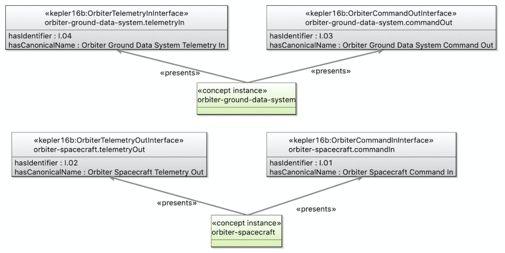
-
Append the following OML code to the body of
description/bundleto include the newinterfacesontology. Save the editor.
includes < http : //example.com/tutorial2/description/interfaces#> -
Let us check that our ontologies are good so far, by running the task
tutorial2/oml/buildfrom the Gradle Task view, and waiting for it to finish running in the Gradle Executions view. This should run with no errors.
New Queries
Note: No new queries for this pattern. We will incorporate it with another pattern below.
2.9. P7: Requirement specifies Presents
Pattern Synopsis
Requirements specify conditions that must be true of the system. One thing a requirement may specify is that some component presents an interface of a certain type or with certain properties. We say this with the reification pattern: (Requirement specifies (Component presents Interface)), in which (Component presents Interface) is reified with a member of class Presents (as seen above in P6).
New Vocabulary
-
In the
vocabulary/missionontology, append the following OML code to the body. Save the editor.
@rdfs : comment "SpecifiedThing is something that isSpecifiedBy a Requirement" aspect SpecifiedThing @rdfs : comment "Presents is a relation that can be specified by a requirement." ref relation entity Presents < SpecifiedThing @rdfs : comment "A Requirement specifies that something must be true about something." concept Requirement < base : IdentifiedThing @rdfs : comment "A Requirement specifies zero or more SpecifiedThings." relation entity Specifies [ from Requirement to SpecifiedThing forward specifies reverse isSpecifiedBy functional asymmetric irreflexive ]
Note: how we added aspect SpecifiedThing as another supertype to relation entity Presents, which was previous defined. This says that its relation instances can be ranges of Specifies links.
-
The following is a visualization of the
missionvocabulary so far:
-
Let us check that our ontologies are good so far, by running the task
tutorial2/oml/buildfrom the Gradle Task view, and waiting for it to finish running in the Gradle Executions view. This should run with no errors.
New Description
With this pattern in the vocabulary, and with (Component Presents Interface) relation instances specified in P6 before, we can now create requirements that specify those instances.
-
Create a description with the IRI <
http://example.com/tutorial2/description/requirements#> and prefixrequirements. Copy the following OML code as its contents. Save the editor.
description < http : //example.com/tutorial2/description/requirements#> as requirements { uses < http : //example.com/tutorial2/vocabulary/base#> as base uses < http : //example.com/tutorial2/vocabulary/mission#> as mission extends < http : //example.com/tutorial2/description/interfaces#> as interfaces instance orbiter - ground - data - system - command - to - spacecraft : mission : Requirement [ base : hasIdentifier "R.04" mission : specifies interfaces : orbiter - ground - data - system . presents . commandOut ] instance orbiter - spacecraft - command - from - ground - data - system : mission : Requirement [ base : hasIdentifier "R.05" mission : specifies interfaces : orbiter - spacecraft . presents . commandIn ] instance orbiter - ground - data - system - telemetry - from - spacecraft : mission : Requirement [ base : hasIdentifier "R.06" mission : specifies interfaces : orbiter - ground - data - system . presents . telemetryIn ] instance orbiter - spacecraft - telemetry - to - ground - data - system : mission : Requirement [ base : hasIdentifier "R.07" mission : specifies interfaces : orbiter - spacecraft . presents . telemetryOut ] }
-
The following is a visualization of the
requirementsdescription:
-
Append the following OML code to the body of
description/bundleto include the newrequirementsontology. Save the editor.
includes < http : //example.com/tutorial2/description/requirements#> -
Let us check that our ontologies are good so far, by running the task
tutorial2/oml/buildfrom the Gradle Task view, and waiting for it to finish running in the Gradle Executions view. This should run with no errors.
New Queries
Let us now develop a query that extracts the requirements on components presenting interfaces.
-
Create the file
src/sparql/requirements.sparqland copy the following SPARQL code as its content.
PREFIX base : < http : //example.com/tutorial2/vocabulary/base#> PREFIX mission : < http : //example.com/tutorial2/vocabulary/mission#> PREFIX oml : < http : //opencaesar.io/oml#> SELECT DISTINCT ? r_id ? c_id ? i_id WHERE { ? r a mission : Requirement ; base : hasIdentifier ? r_id ; mission : specifies [ a mission : Presents ; oml : hasSource [ base : hasIdentifier ? c_id ] ; oml : hasTarget [ base : hasIdentifier ? i_id ] ] } ORDER BY ? r_id ? c_id ? i_id
-
Let’s now run this query by running the task
tutorial2/oml/owlQueryfrom the Gradle Task view and waiting for it to finish execution in the Gradle Executions view. It should run with no errors. -
Right click on the project in the Model Explorer view and select
Refresh. Navigate to the filebuild/results/requirements.jsonand double click it to open its editor. You should see the following results in JSON.
-
With this JSON results, one could develop a requirement doc generator that would generate the following:
Note: the doc generator code is not part of the tutorial.
Requirement 'R.04' specifies that component 'Orbiter Ground Data System' shall present interface 'Command Out'.Requirement 'R.05' specifies that component 'Orbiter Spacecraft' shall present interface 'Command In'.Requirement 'R.06' specifies that component 'Orbiter Ground Data System' shall present interface 'Telemetry In'.Requirement 'R.07' specifies that component 'Orbiter Spacecraft' shall present interface 'Telemetry Out'.
2.10. P8: Interface joins Interface
Pattern Synopsis
Junctions represent actual connections between Interfaces presented by Components. When a component has an interface that joins an interface of another component, we infer that there is a Connection between these components.
New Vocabulary
-
In the
vocabulary/missionontology, append the following OML code to the body. Save the editor.
@rdfs : comment "A Junction joins two or more Interfaces." relation entity Junction [ from Interface to Interface forward joins symmetric irreflexive ] @rdfs : comment "A Component connects to zero or more components." relation entity Connection [ from Component to Component forward connectsTo symmetric ] @rdfs : comment "When interfaces presented by components are joined, we infer that the components are connected." rule Junction - infers - Connection [ presents ( c1 , i1 ) & joins ( i1 , i2 ) & isPresentedBy ( i2 , c2 ) -> connectsTo ( c1 , c2 ) ]
Note: how the rule Junction-infers-Connection says that when a component presents an interface that joins another interface, which is presented by another component, then the former component is said to connect to the latter component. Since both relation entities Junction and Connection are flagged as symmetric, a single assertion that a junction joins one interface to another is sufficient to make a DL reasoner infer that both their components connect to one another.
-
The following is a visualization of the
missionvocabulary so far:
-
Let us check that our ontologies are good so far, by running the task
tutorial2/oml/buildfrom the Gradle Task view, and waiting for it to finish running in the Gradle Executions view. This should run with no errors.
New Description
With this pattern in the vocabulary, we can specify Junction relation instances between some interfaces.
-
Create a description with the IRI <
http://example.com/tutorial2/description/junctions#> and prefixjunctions. Copy the following OML code as its contents. Save the editor.
description < http : //example.com/tutorial2/description/junctions#> as junctions { uses < http : //example.com/tutorial2/vocabulary/base#> as base uses < http : //example.com/tutorial2/vocabulary/mission#> as mission extends < http : //example.com/tutorial2/description/interfaces#> as interfaces relation instance orbiter - ground - data - system . orbiter - spacecraft . command . uplink : mission : Junction [ from interfaces : orbiter - ground - data - system . commandOut to interfaces : orbiter - spacecraft . commandIn base : hasIdentifier "J.01" base : hasCanonicalName "Orbiter Command Uplink" ] relation instance orbiter - ground - data - system . orbiter - spacecraft . telemetry . downlink : mission : Junction [ from interfaces : orbiter - spacecraft . telemetryOut to interfaces : orbiter - ground - data - system . telemetryIn base : hasIdentifier "J.02" base : hasCanonicalName "Orbiter Telemetry Downlink" ] }
-
The following is a visualization of the
junctionsdescription: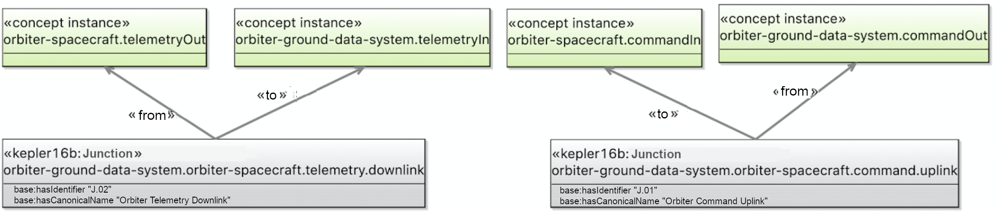
-
Append the following OML code to the body of
description/bundleto include the newjunctionsontology. Save the editor.
includes < http : //example.com/tutorial2/description/junctions#> -
Let us check that our ontologies are good so far, by running the task
tutorial2/oml/buildfrom the Gradle Task view, and waiting for it to finish running in the Gradle Executions view. This should run with no errors.
New Queries
Let us now develop a query that extracts the requirements on components presenting interfaces.
-
Creat the file
src/sparql/connections.sparqland copy the following SPARQL code as its content.
PREFIX base : < http : //example.com/tutorial2/vocabulary/base#> PREFIX mission : < http : //example.com/tutorial2/vocabulary/mission#> SELECT DISTINCT ? c1_name ? c2_name WHERE { ? c1 a mission : Component ; base : hasCanonicalName ? c1_name ; mission : connectsTo [ base : hasCanonicalName ? c2_name ] } ORDER BY ? c1_name ? c2_name
-
Let’s now run this query by running the task
tutorial2/oml/owlQueryfrom the Gradle Task view and waiting for it to finish execution in the Gradle Executions view. It should run with no errors. -
Right click on the project in the Model Explorer view and select
Refresh. Navigate to the filebuild/results/connections.jsonand double click it to open its editor. You should see the following results in JSON.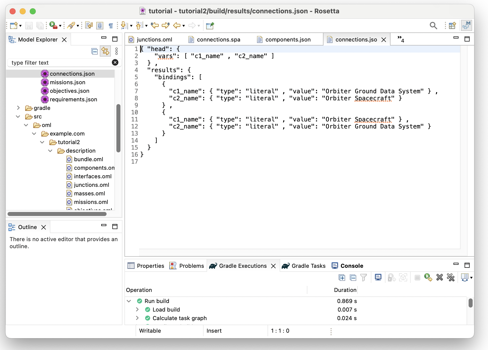
Note: how the entailments generated by the DL reasoner allowed us to write concise queries that would otherwise have had to encode all the logical semantics.
2.11. Summary
This tutorial introduced the pattern-based approach of modeling with OML. It demonstrated how vocabulary can be designed in terms of patterns with well-defined syntax and semantics that allow useful analysis to be carried out on a model in support of a particular methodology of systems modeling. It also demonstrated how descriptions can be organized into loosely coupled fragments that declare minimum dependencies on each other. This can help scalability when specifying large models (by loading the minimum information only). It can also improve reusability of models (by reusing the minimum information only). Finally, the tutorial also covered some more syntax and semantics of OML that makes modeling and reasoning flexible and powerful. We saw the use of aspects as mix-in types to add capabilities to concepts and relation entities, relation entities and how they can be used to create both reified and unreified links, scalar properties and how they are typed by datatypes, restrictions and how they can be used to tighten the range or values of properties, and rules and semantic flags of relation entities and how they can influence logical entailments and reasoning.
3. Tutorial 3: OML CI
Note: This tutorial builds on the project developed in Tutorial 2. Please do that first before proceeding.
3.1. Learning Objectives
Managing an OML project in a git repository makes a lot of sense since OML models are textual artifacts. One of the biggest advantages of managing source files in a git repo is that it is easy to setup a continuous integration (CI) pipeline that builds the source on every commit. This mechanism to centralize and automate the build process is especially important to help foster collaboration on a project without sacrificing its quality as it detects problems early.
By the end of this tutorial, readers will be able to:
-
Setup a Git repository for OML projects:
-
Setup CI pipelines for OML repositories
-
Use CI pipeline to detect OML syntactic errors
-
Use CI pipeline to detect OML semantic errors
Note: The source files created in this tutorial are available for reference in this repository, but we encourage the reader to recreate them by following the instructions below.
3.2. Setup Git Repository
In this step, we will create a new Github repo and push the OML project from Tutorial 2 to it using the Git CLI.
-
Open a web browser. navigate to your favorite Github organization and select the
New Repositorybutton. Set the name of the repo tokepler16b-exampleand the other settings as shown below. Finally, click theCreate Repositorybutton.
-
In your OML Rosetta workspace, right-click on the
tutorial2project, select Proprties action, and note theLocationpath.
-
Open the
Terminalapplication on your machine, navigate to the project’s path, and initialize the repo using the following commands:
$ cd path/to/tutorial2$ git init$ git remote add origin git@github.com:OWNER/kepler16b-example.git$ git pullReplace OWNER by your new Github repo’s owner.
-
Stage, commit, and push the project to the Github remote repository using the following commands:
$ git add .$ git commit -m"initial commit" $ git push --set-upstream origin main -f
-
In your web browser, refresh the repo’s page. You should now see the repository looking like this:

-
In the OML Rosetta workspace, right click on the project and choose Refresh.

3.3. Setup CI Pipeline
In this step, we will create a CI pipeline for the repository using Github Actions. The pipeline (called a workflow in Github Actions) will build the project on every commit.
-
In a web browser, navigate to your repo’s web page, and click on the Actions tab.
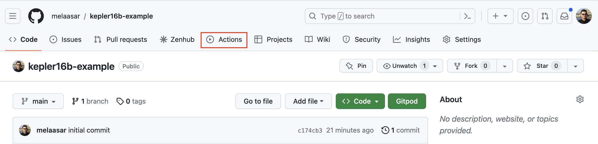
-
In the Actions page, click on the
Configurebutton of theSimple workflow.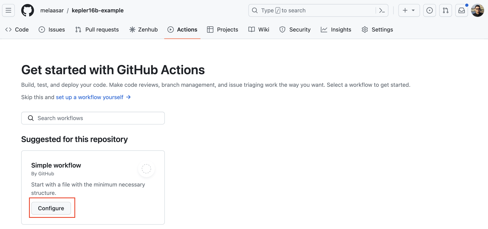
-
In the path, rename the file to
ci.yml.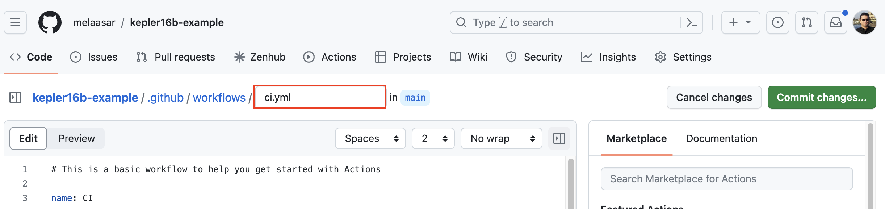
-
Replace the file contents by the following code:
name : CI/CDon : push : branches : ["main" ]pull_request : branches : ["main" ]permissions : contents : readjobs : build : runs-on : ubuntu-lateststeps : -name : Checkoutuses : actions/checkout@v3 -name : Setup JDKuses : actions/setup-java@v3with : java-version : '17' distribution : 'temurin' -name : Setup Gradleuses : gradle/gradle-build-action@v2 -name : Buildrun : ./gradlew build -name : Uploadif : ${{ always() }}uses : actions/upload-artifact@v3with : name : buildpath : build/
The CI workflow above has a single job called build with 5 named: Check, Setup JDK, Setup Gradle, Build (runs the DL reasoner) and Upload (uploads the build folder as an artifact for later inspection in case of error).
-
Push the
cy.ymlfile to the repo and watch the first workflow run complete successfully. -
Back in OML Rosetta, Right click on the project and select Team -> Pull. A pull results dialog will open. Press the button to close it.
Note: this last step is needed to refresh the local clone of the repo with the changes we committed on the remote on Github.
3.4. Detect Syntactic Error
In OML Rosetta, create a new branch, add a syntactic error (an invalid cross-reference) to the OML files, and push it. Watch how the CI workflow detects the error. Then, undo the change and push to watch how the workflow succeeds again.
3.5. Detect Semantic Error
In OML Rosetta, in the same branch (created in the previous step), add a semantic error (an assembly contained by two assemblies which is a violation of the base:contains relation being inverse functional) to the OML files to see how the CI workflow detects the error. Then, undo the change and push to watch how the workflow succeeds again.
3.6. Summary
In the realm of OML projects, efficient collaboration and project integrity are paramount. This tutorial serves as a comprehensive guide, detailing the strategic management of OML projects within Git repositories, fortified by Continuous Integration (CI) pipelines. Through a step-by-step approach, the tutorial expertly navigates learners through the intricacies of project management on GitHub repositories, followed by the establishment of robust CI pipelines using GitHub Actions. A focal point of the tutorial lies in the demonstration of how these pipelines can adeptly identify both syntactic and semantic errors in commits pushed to the repository. By embracing these methodologies, professionals can elevate project collaboration, fortify quality control, and ensure the consistent enhancement of OML projects within a collaborative environment.
4. Tutorial 4: OML Reports
Note: This tutorial builds on the project developed in Tutorial 3. Please do that first before proceeding.
4.1. Learning Objectives
Modeling a system with OML would not be useful without the ability to analyze the model and share the analysis results with the project’s stakeholders. In Tutorial 2, we learned how an OML model can be analyzed with SPARQL queries, and the results visualized, but we did not see how those visualizations were created. Moreover, in Tutorial 3, we learned how a (CI or Continuous Integration) pipeline can run the build task automatically, but we did not see how it can also automate the analysis of the project and the deployment of the results to the project’s stakeholder (CD or Continuous Deployment).
By the end of this tutorial, readers will be able to:
-
Utilize Jupyter Notebook to create a rich report based on SPARQL query results (final result).
-
Generate canonical OML documentation (OmlDoc) that can be cross referenced from the report.
-
Evolve a CI pipeline to be a CI/CD pipeline that runs analysis and deploys its results.
Note: The source files created in this tutorial are available for reference in this repository, but we encourage the reader to recreate them by following the instructions below.
4.2. Install Jupyter Notebook
Jupyter is an open-source project that lets you easily combine Markdown text and executable Python source code on one canvas called a notebook. Many editors support working with Jupyter Notebooks; however, in this tutorial we will use VS Code.
-
If you don’t already have Python with the Jupyter package, follow these instructions.
-
If you don’t already have VS Code with Jupyter Notebook extension, follow these instructions.
-
Run VS Code client and if the Terminal window is not already visible, open it by selecting View -> Terminal from the main menu.
Note: for best experience in this tutorial, switch VS Code to the Light Modern color theme.
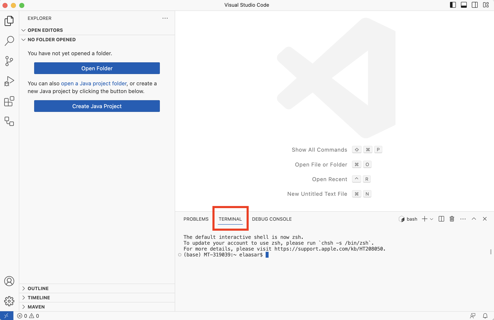
-
Select File -> Open Folder... and select the folder of the project you created in Tutorial 2.
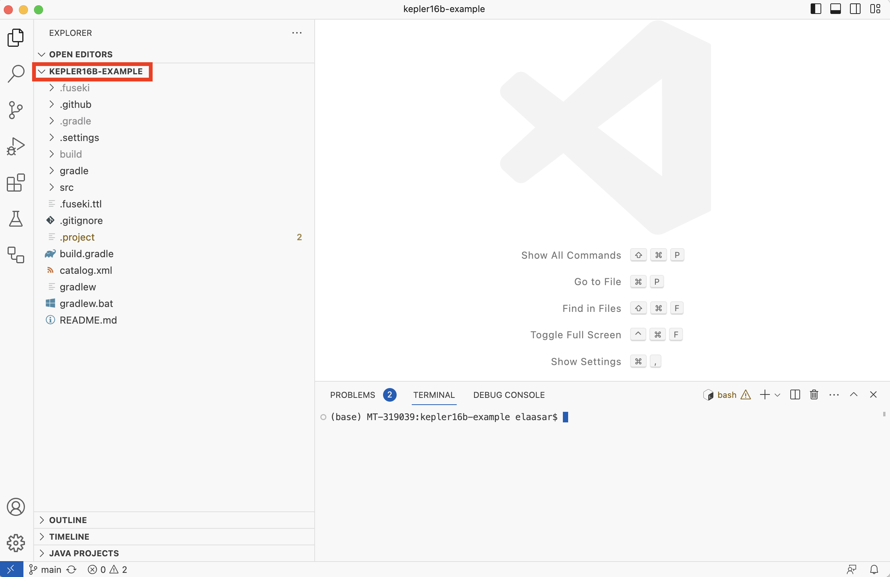
Note: Assuming you had also done Tutorial 3, this folder should be a clone of a git repository called kepler16b-example.
4.3. Run SPARQL Queries
Recall from Tutorial 2 that an OML project can create SPARQL query files in some path and store results in some other path. The code below is an excerpt from the project’s ./build.gradle file showing a task called owlQuery that runs the SPARQL queries.
task owlQuery ( type: io . opencaesar . owl . query . OwlQueryTask , group: "oml" , dependsOn: owlLoad ) { inputs . files ( owlLoad . inputs . files ) // rerun when the dataset changes endpointURL = "http://localhost:3030/$dataset" . toString () queryPath = file ( 'src/sparql' ) resultPath = file ( 'build/results' ) format = 'json' }
-
In the Terminal view, run the following command, then inspect the json files in the
build/resultsfolder.
$ ./gradlew owlQuery> Task :startFusekiFuseki server is already running withpid = 56106 BUILD SUCCESSFULin 6s6 actionable tasks:3 executed,3 up-to-date
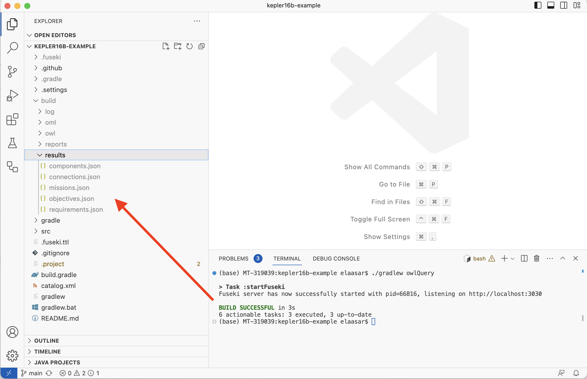
-
Open the
.github/workflows/ci.ymlfile (created in Tutorial 3) and insert the following step right before theUploadone:
-name : Queryrun : ./gradlew owlQuery
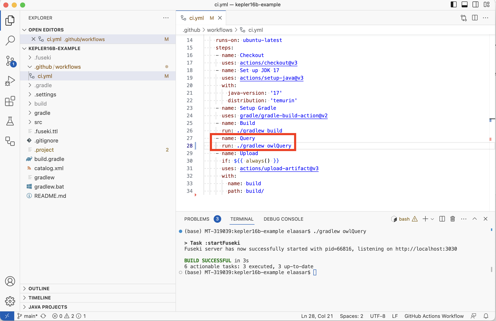
-
Click on the Source Control tab on the left; you should find the
ci.ymlfile listed. Type a commit message and selectCommit & Pushbutton. AnswerYesin the next dialog box. Wait for the operation to finish. -
In a web browser, navigate to the
kepler16b-exampleGithub repo you created in Tutorial 3. Click on the Actions tab. Wait until the CI workflow succeeds.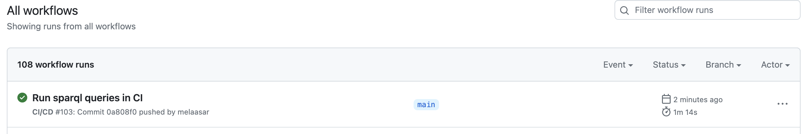
4.4. Generate OML Doc
In this step, we will add a new task of type OwlDoc to the build.gradle file. This tool generates default documentation for an Oml dataset. We will also add it to the CI script.
Not: An OwlDoc task requires the Oml dataset to be converted first to Owl, which we get when we chain it to an Oml2Owl task.
-
In VS Code, switch to the Explorer tab on the left. Open the
build.gradlefile. Find thebuildscript.dependenciesclause. Add a new dependency on theowl-doc-gradletool on the top:
classpath 'io.opencaesar.owl:owl-doc-gradle:2.+' 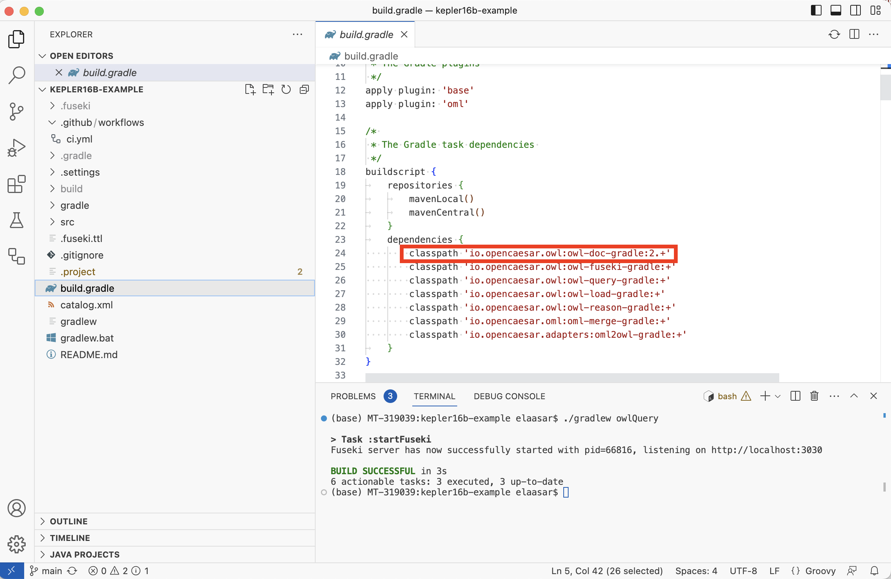
-
In the
build.gradlefile, insert the followinggenerateDocstask right before thestartFusekitask. Save.
/* * A task to generate documentation for the OWL catalog * @seeAlso https://github.com/opencaesar/owl-tools/blob/master/owl-doc/README.md */ task generateDocs ( type: io . opencaesar . owl . doc . OwlDocTask , dependsOn: owlReason ) { // OWL catalog inputCatalogPath = file ( 'build/owl/catalog.xml' ) // OWL catalog title inputCatalogTitle = 'Kepler16b' // OWL catalog version inputCatalogVersion = project . version // OWL Ontology Iris inputOntologyIris = [ "$rootIri/classes" , "$rootIri/properties" , "$rootIri/individuals" ] // Output folder outputFolderPath = file ( 'build/web/doc' ) // Output case sensitivie path outputCaseSensitive = org . gradle . internal . os . OperatingSystem . current (). isLinux () }

-
In Terminal, run
./gradlew generateDocs. Inspect thebuild/web/docfolder. You will find the generated HTML documentation.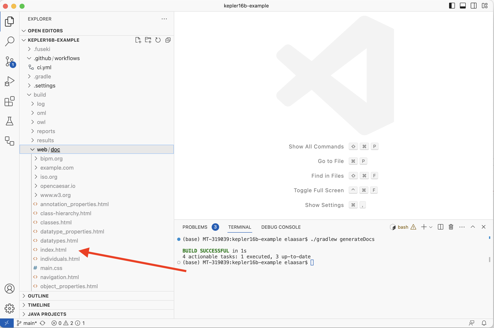
-
Open the file
build/web/doc/index.htmlin a web browser and browse through the generated documentation.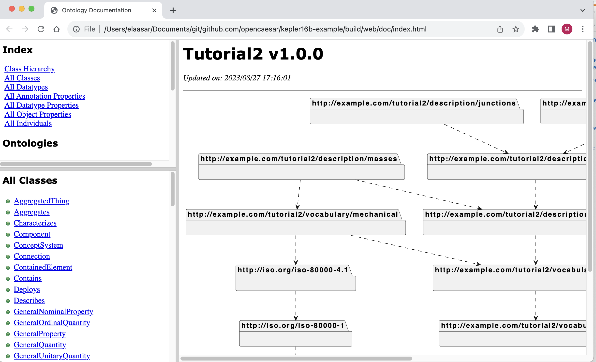
-
Open the
.github/workflows/ci.ymlfile and add the following step right after theUploadstep.
-name : Generate Docsrun : ./gradlew generateDocs
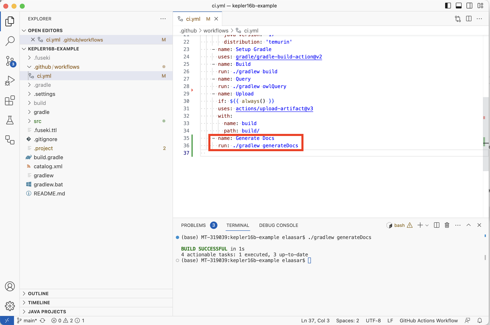
-
Using the Source Control tab, commit and push both
build.gradleandci.ymlfiles. Check that the CI workflow succeeded on the repository’s Actions tab.
4.5. Setup Github Pages
In the next few sections, we will create a Jupyter Notebook, convert it to HTML, and publish (deploy) it. Before we can do that, we need to setup a web server to deploy it to.
A convenient choice here is to deploy to the repository’s Github Pages. This makes the page accessible at the address http://OWNER.github.io/kepler16b-example/ (where OWNER is the repository’s owner on github).
-
In your web browser, navigate to the repo’s URL, click on the Settings tab, then on the Pages tab (on the right).
-
In the
Build and Deploymentsection, click on theSourcecombo box, and selectGithub Actions.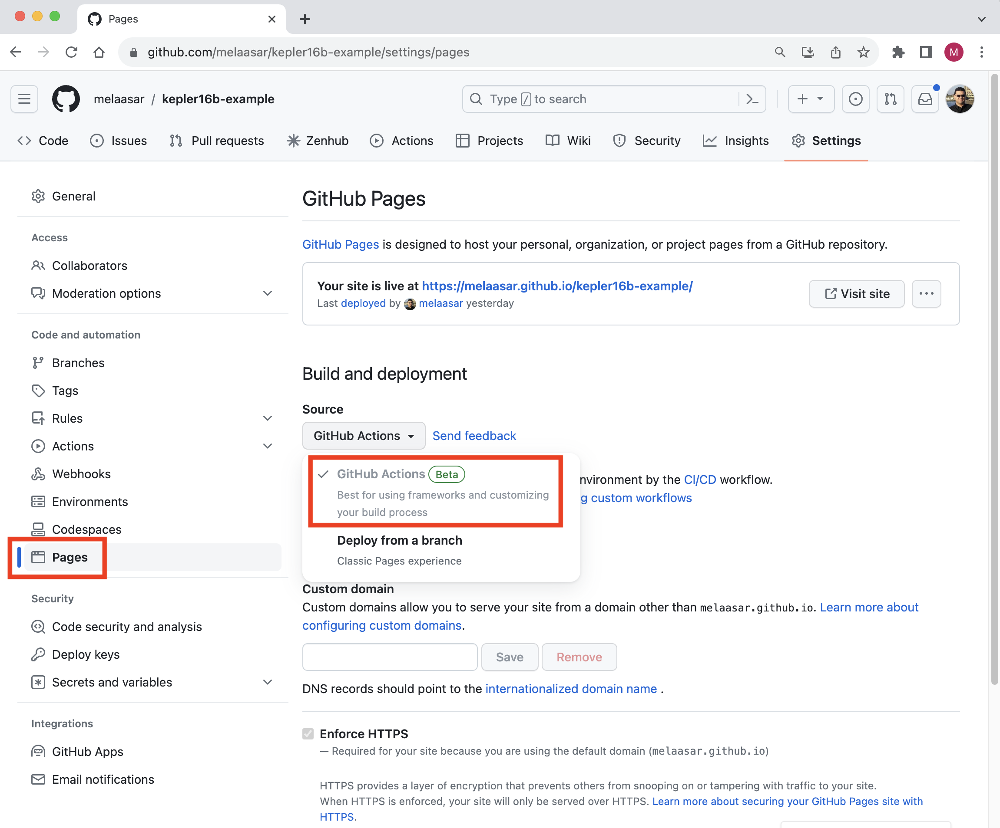
Note: This choice means that the content of Pages will be published by a Github Actions workflow. As we will see below, this will allow the repository’s CI script to publish it,
4.6. Create Jupyter Notebook
In this step, we will create a simple Jupyter Notebook in the project and setup the CI workflow to publish it to Github Pages.
-
In VS Code Explorer, right click on the
srcfolder, select New Folder, and call itipynb. -
Right click on the
ipynbfolder, select New File, and call itindex.ipynb. This opens a Jupiter Notebook editor with a single empty cell. -
In the top right corner of the editor, click on the
Select Kernelbutton, selectPython Environments, and select one of the available Python 3 environments. Notice that now the name of the selected kernel shows up in the top right corner. -
Hover over the first empty cell in the editor. A toolbar appears with a trash can. Click on the trash can to delete the cell.
-
In place of the cell, you should now see two buttons, one says
Codeand the other saysMarkdown. Click on the latter. This adds a Markdown cell as the first cell. -
In the cell, type the following text, then click on the
✓(tick) icon in the cell’s toolbar to apply. The editor should now look like the picture below.
# Kepler16bThe Kepler16b project is developing a hypothetical mission to an exoplanet that is millions of light years away.
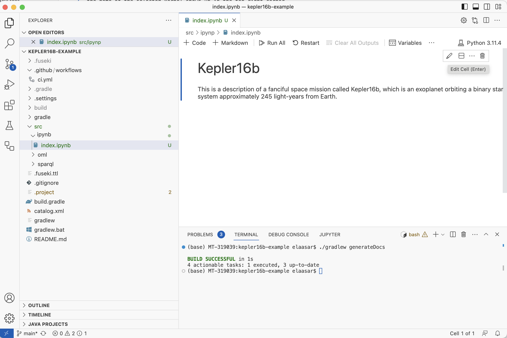
Before we go further, let us setup the CI script to publish this simple Notebook. This involves setting up a Python environment, installing some dependencies, running a couple of python tools to execute the notebook and convert it to HTML, then finally deploying that HTML to Github Pages.
-
In VS Code Explorer, right click on the
ipynbfolder, choose New File, and name itrequirements.txt. Insert the following text as its contents and save.
ipykernel nbconvert pandas plantuml igraph cairocffi
Note: A requirements.txt file is a typical Python mechanism to declare dependencies. In this case, the first two dependencies are the minimum required to enable executing and converting the notebook to HTML. The rest of the dependencies are libraries that will be used in the steps below to visualize the analysis results.
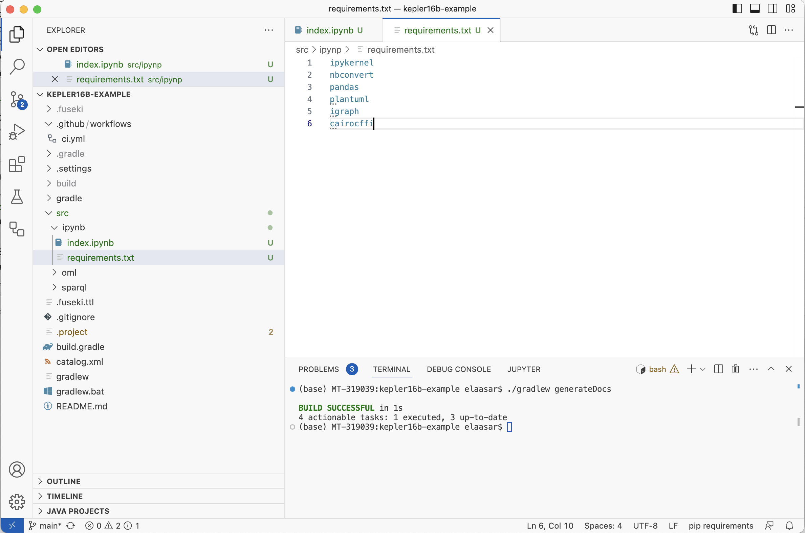
-
In VS Code Terminal, activate the python environment used by the notebook’s kernel, then run the following command to install the dependencies locally:
pip install -r src/ipynb/requirements.txt
-
Open the
.github/workflows/ci.ymlfile and add the following step right after theGenerate Docsstep.
-name : Set up Python 3uses : actions/setup-python@v4with : python-version : '3.10' -name : Install Requirementsrun : pip install -r src/ipynb/requirements.txt -name : Run Notebookrun : python -m nbconvert --execute --to notebook --no-input src/ipynb/index.ipynb --output-dir='build/web' -name : Convert Notebook to HTMLrun : python -m nbconvert --to html --no-input build/web/index.ipynb -name : Publishuses : actions/upload-pages-artifact@v1with : path : build/webdeploy : needs : buildpermissions : pages : writeid-token : writeenvironment : name : github-pagesurl : ${{ steps.deployment.outputs.page_url }}runs-on : ubuntu-lateststeps : -name : Deployid : deploymentuses : actions/deploy-pages@v1
Note: The first set of steps are added to the build job. They setup a Python 3 environment, install the dependencies, run the notebook, convert it to HTML in the build/web folder, then upload the folder as a Pages artifact. Then, a new job named deploy is added. This job runs after build is done and deploys the Pages artifact to the web server.
-
Using the Source Control tab, commit and push all the three files
index.ipynb,requirements.txtandci.yml. Check that the CI workflow succeeded on the repository’s Actions tab. You should see the following page in your browser: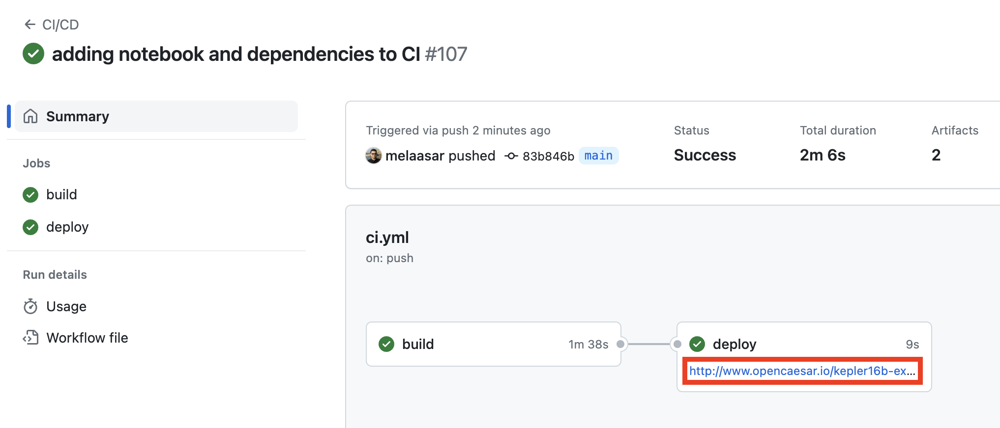
-
Click on the hyperlink in the
deploybox to navigate the deployed Github Pages of the repository. This should open up a new page that looks like this: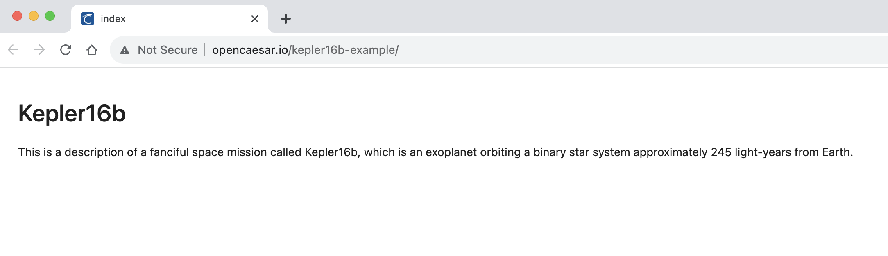
4.7. P1: Reference Documentation
In this step, we will add to the notebook some cross references to the OML documentation that we generated previously for the project.
-
In the
src/ipynb/index.ipynbeditor, add a new Markdown cell, and type the following text in it. Click the✓icon to apply.
## MissionsThe Kepler16b project delivers two missions: [a Lander Mission ](doc/example.com/tutorial2/description/missions/lander.html ) and an [Orbiter Mission ](doc/example.com/tutorial2/description/missions/orbiter.html ), each of which pursues a number of objectives. For details, check the [full documentation ](doc ).
-
Using the Source Control tab, commit
index.ipynb. In the repository’s website, wait until the CI workflow succeeds, navigate to the Pages link and refresh the page.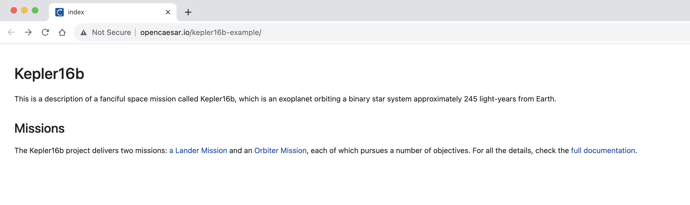
-
Click on the three hyperlinks and verify that you can navigate to them fine.
4.8. P2: Visualize Missions
In this step, we will add the first visualization of SPARQL query results to the notebook. In this case, we will visualize data from the build/results/missions.json file, which holds the result of running the missions.sparql query, which matched missions and the objectives they pursue. We will use d3.js to code this visualization, but to make this easier to present here, we will copy and paste a python file called utilities.py (that has helpful utility functions) to the project.
-
Navigate to the file utilities.py and copy its contents.
-
In VS Code Explorer, right click on the
ipynbfolder, select New File, name itutilities.py, and paste the contents to it. Save.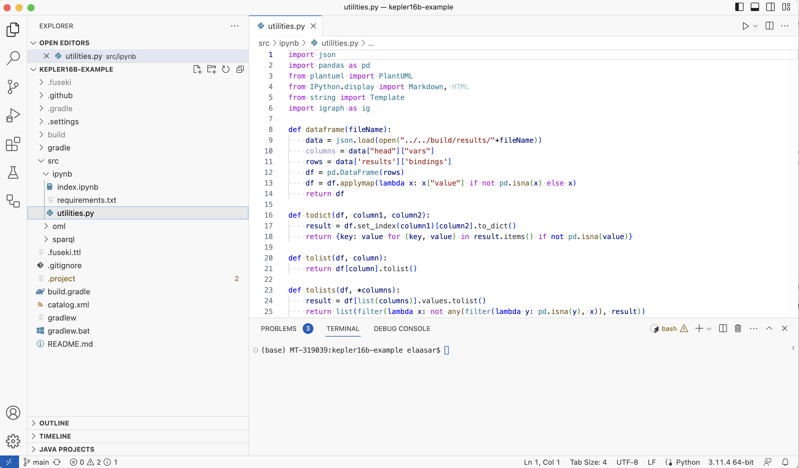
-
In the
src/ipynb/index.ipynbeditor, add a new Code cell, and type the following code in it. Click on the execute button on the cell’s left side to run.
from utilities import * df = dataframe ( "missions.json" ) data = df . to_json ( orient = "records" ) HTML ( tree . safe_substitute ( data = data ))
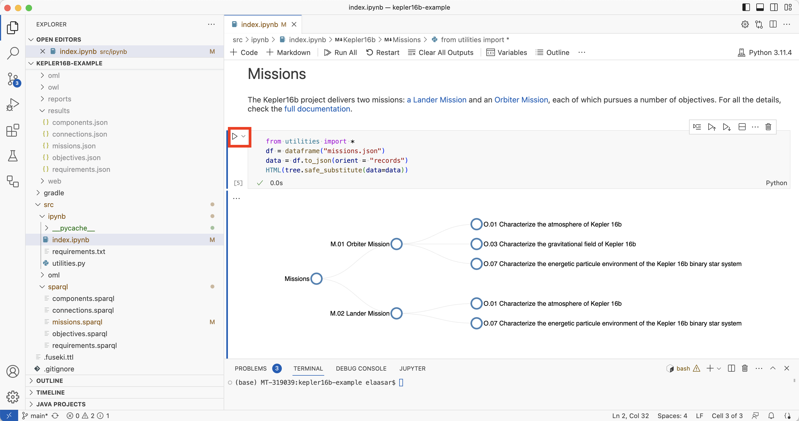
Note: Click on the circles to collapse/expand them
-
Using the Source Control tab, commit
index.ipynbandutilities.py. In the repository’s website, wait until the CI workflow succeeds, navigate to the Pages link and refresh the page.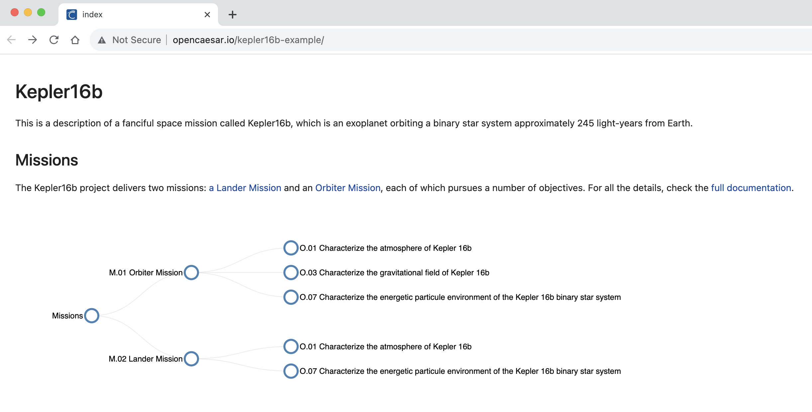
4.9. P3: Visualize Objectives
In this step, we will add a visualization for the data in the build/results/objectives.json file, which holds the result of running the objectives.sparql query, which matched the objective aggregation hierarchy. We will use the PlantUml tool to code this visualization.
-
In the
src/ipynb/index.ipynbeditor, add a new Markdown cell, and type the following text in it. Click the✓icon to apply.
## ObjectivesThe Kepler16b missions' objectives aggregate other lower-level objectives as depicted by the following diagram:
-
In the
src/ipynb/index.ipynbeditor, add a new Code cell, and type the following code in it. Click on the execute button on the cell’s left side to run.
from utilities import * df = dataframe ( "objectives.json" ) objectives1 = todict ( df , 'o1_id' , 'o1_name' ) objectives2 = todict ( df , 'o2_id' , 'o2_name' ) aggregations = tolists ( df , 'o1_id' , 'o2_id' ) diagram ( objects ( union ( objectives1 , objectives2 ), aggregations , 'o--' , 'objective' ))
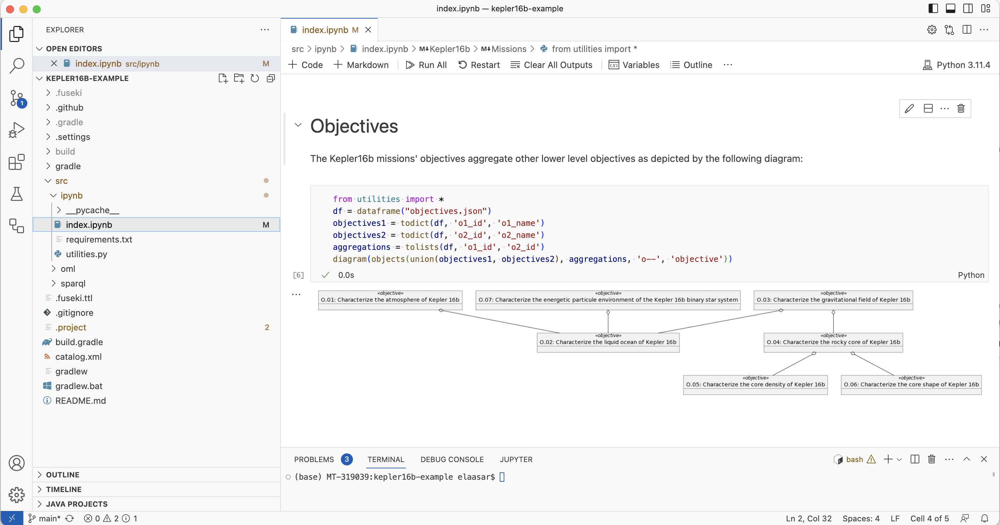
-
Using the Source Control tab, commit
index.ipynb. In the repository’s website, wait until the CI workflow succeeds, navigate to the Pages link and refresh the page.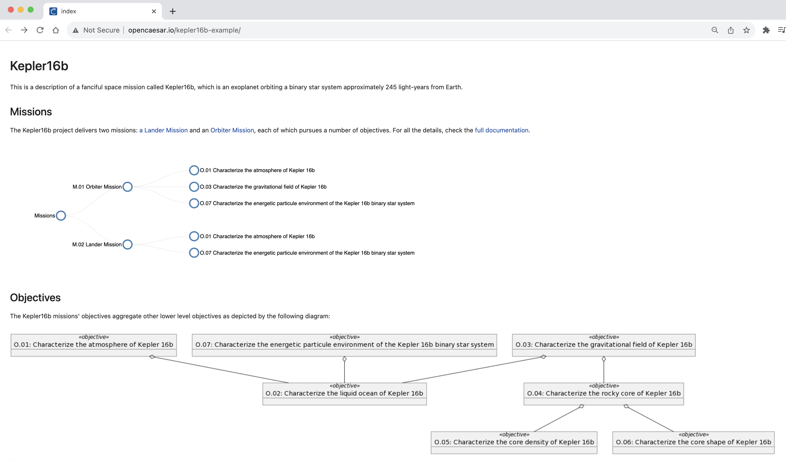
4.10. P4: Visualize Components
In this step, we will add a visualization for the data in the build/results/components.json file, which holds the result of running the components.sparql query, which matched the component physical decomposition hierarchy. We will use the PlantUml tool to code this visualization.
-
In the
src/ipynb/index.ipynbeditor, add a new Markdown cell, and type the following text in it. Click the✓icon to apply.
## ComponentsThe Kelper16 missions' components are organized in a physical decomposition hierarchy as shown below.
-
In the
src/ipynb/index.ipynbeditor, add a new Code cell, and type the following code in it. Click on the execute button on the cell’s left side to run.
from utilities import * df = dataframe ( "components.json" ) components1 = todict ( df , 'c1_id' , 'c1_name' ) components2 = todict ( df , 'c2_id' , 'c2_name' ) compositions = tolists ( df , 'c2_id' , 'c1_id' ) diagram ( 'left to right direction \n skinparam nodesep 10 \n ' + objects ( union ( components1 , components2 ), compositions , '*--' , 'component' ))
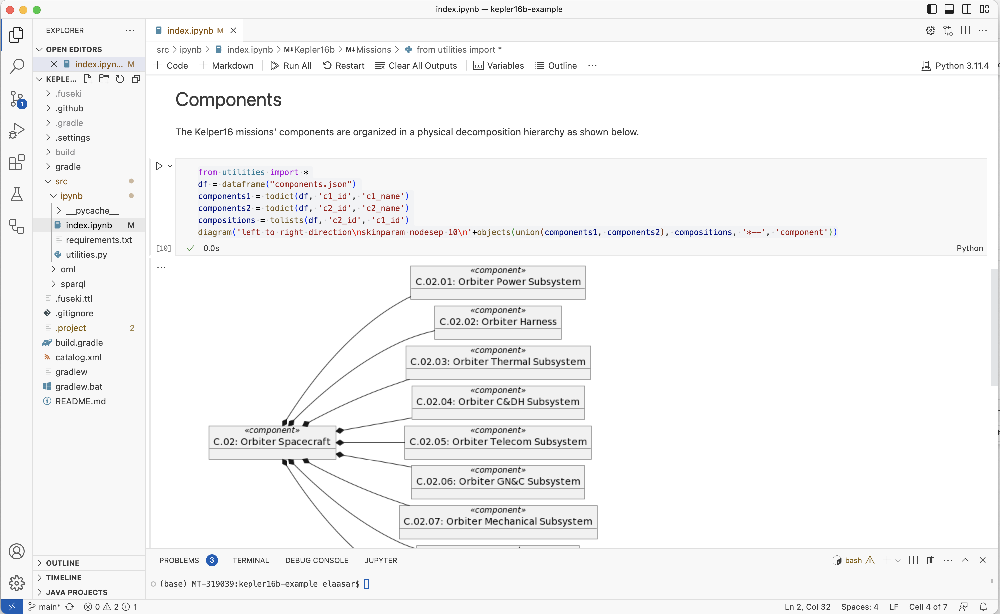
-
Using the Source Control tab, commit
index.ipynb. In the repository’s website, wait until the CI workflow succeeds, navigate to the Pages link and refresh the page.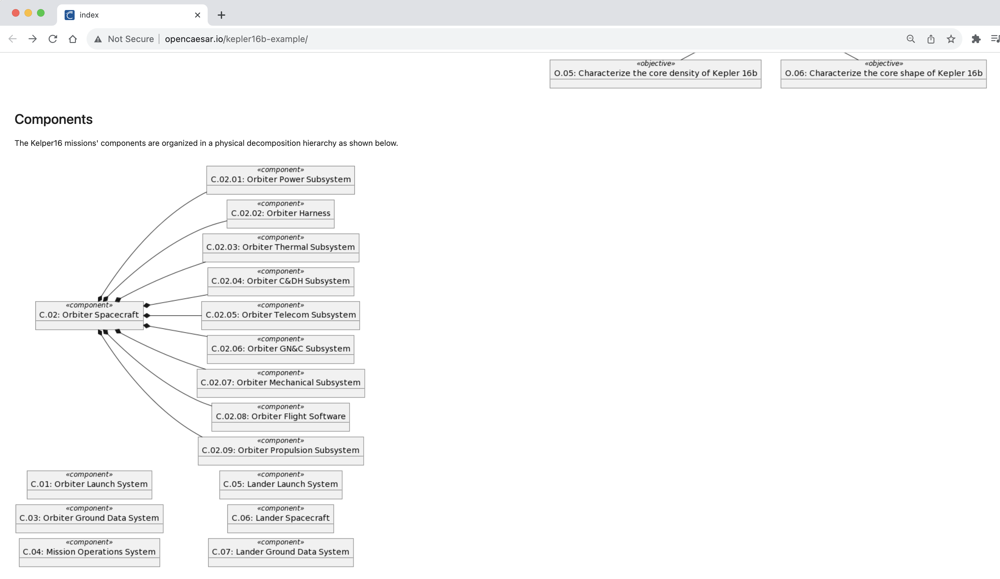
4.11. P5: Visualize Mass Rollup
In this step, we will add another visualization for the data in the build/results/components.json file. This time, we will use the mass matched for each leaf component and roll them up the composition hierarchy. This means the masses of composed components are summed up and set as the mass of their composing component. The final mass of each component is then shown in a Pandas table.
-
In the
src/ipynb/index.ipynbeditor, add a new Markdown cell, and type the following text in it. Click the✓icon to apply.
## Mass RollupThe Kelper16 missions' components are characterized by their masses. Those masses are rolled up the physical decomposition hierarchy as shown below."
-
In the
src/ipynb/index.ipynbeditor, add a new Code cell, and type the following code in it. Click on the execute button on the cell’s left side to run.
from utilities import * df = dataframe ( "components.json" ) components = tolist ( df , 'c1_id' ) compositions = tolists ( df , 'c2_id' , 'c1_id' ) masses = [ float( x ) if not pd . isna ( x ) else 0 for x in tolist ( df , 'c1_mass' )] graph = rollup ( components , compositions , "mass" , masses ) df = df [[ 'c1_id' , 'c1_name' , 'c1_mass' ]] df . loc [:, 'c1_mass' ] = graph . vs [ "mass" ] df = df . rename ( columns = { "c1_id" : "Id" , "c1_name" : "Name" , "c1_mass" : "Mass" }) style = df . style . hide ( axis = "index" ) . set_properties ( ** { 'text-align' : 'left' , 'font-size' : '12pt' ,}) style . format ( precision = 2 ) . set_table_styles ([ dict( selector = 'th' , props = [( 'text-align' , 'left' )])])
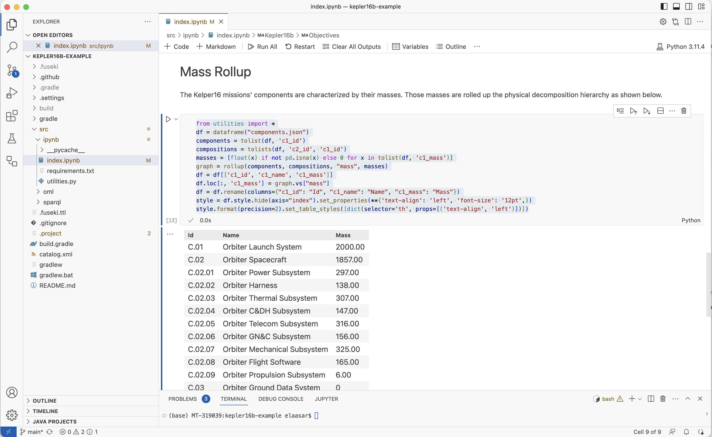
-
Using the Source Control tab, commit
index.ipynb. In the repository’s website, wait until the CI workflow succeeds, navigate to the Pages link and refresh the page.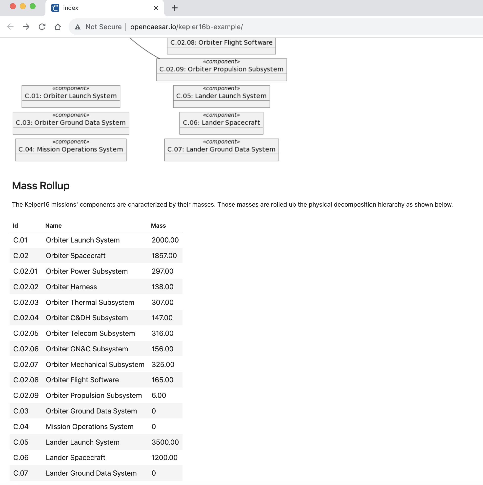
4.12. Change the Model
Now that we have developed an interesting notebook as a report to share with stakeholders, we can now change the OML model and see the notebook getting updated automatically.
-
In VS Code Exploer, edit the file
src/oml/example.com/tutorial2/description/missions.omlby adding a new objective to thelandermission. Save.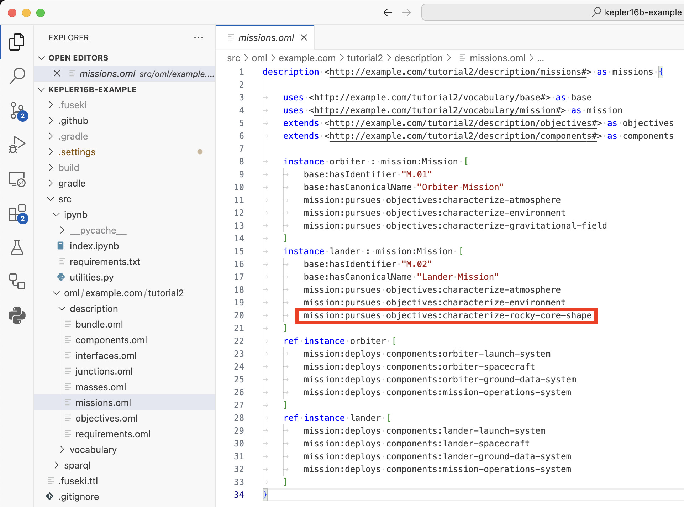
-
Using the Source Control tab, commit
mission.oml. In the repository’s website, wait until the CI workflow succeeds, navigate to the Pages link and refresh the page.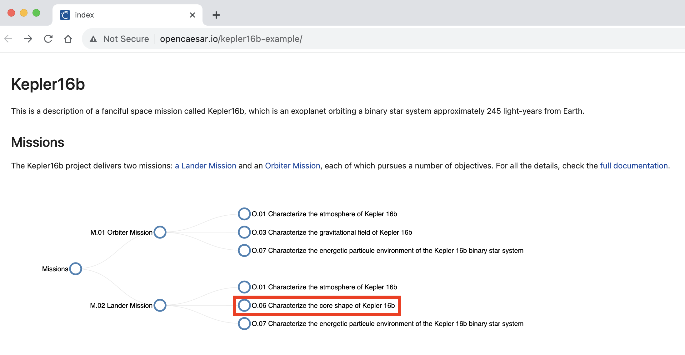
-
In VS Code Exploer, edit the file
src/oml/example.com/tutorial2/description/masses.omlby changing the mass ofcomponents:orbiter-propulsion-subsystemfrom 6 to 106.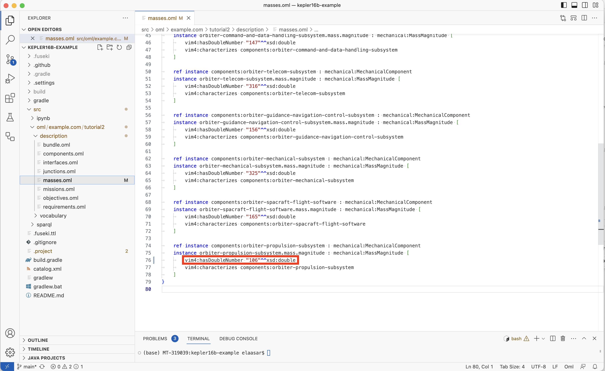
-
Using the Source Control tab, commit
mission.oml. In the repository’s website, wait until the CI workflow succeeds, navigate to the Pages link and refresh the page. Notice the new mass forC.02.09and changed mass of the composing componentC.02now 100 higher than before.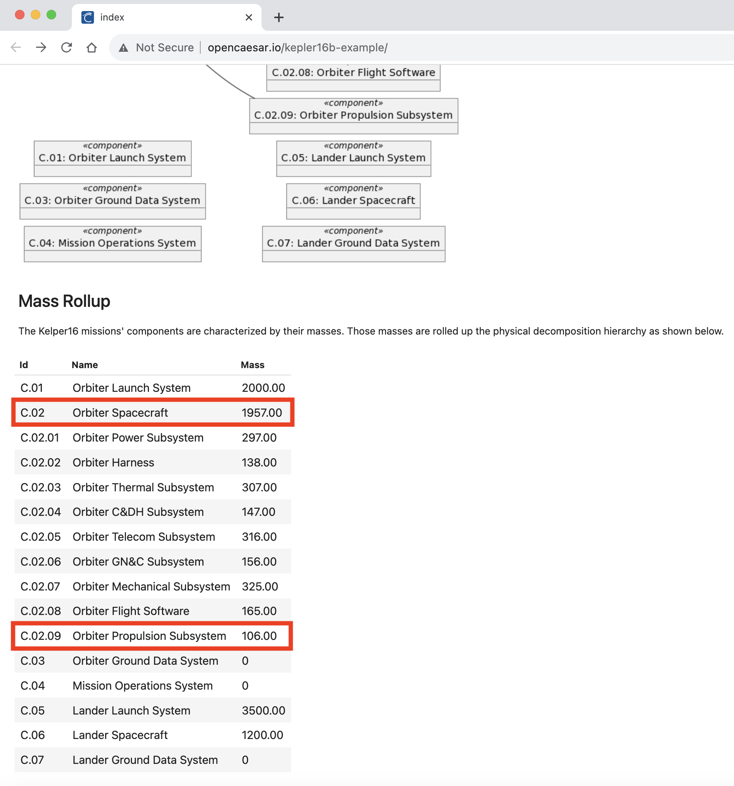
-
In VS Code Explorer, revert the changes you made to the two OML files above. Using the Source Control tab, commit
mission.omlandmasses.oml. In the repository’s website, wait until the CI workflow succeeds, navigate to the Pages link and refresh the page. Verify that the page returns to the original contents before the changes.
4.13. Summary
This tutorial serves as a comprehensive guide, outlining the step-by-step process of utilizing Jupyter Notebook and GitHub Pages to visualize the results derived from querying OML datasets. Through clear and concise instructions, learners will gain practical insights into the seamless integration of these tools for efficient data exploration, analysis, and collaborative review. By employing automation techniques, the tutorial demonstrates how the generated notebook content and OML documentation can be effortlessly deployed onto GitHub Pages, facilitating real-time impact assessment, and fostering a collaborative environment for informed decision-making. This tutorial proves particularly valuable for professionals seeking enhanced methods of data visualization and streamlined peer review processes within the context of OML datasets.
5. Tutorial 5: OML Sirius
Note: This tutorial builds on the skills learned in Tutorial 1. Please do that first before proceeding.
5.1. Learning Objectives
Welcome to this enlightening tutorial where we will explore the versatile capabilities of the Sirius framework and how it simplifies the process of authoring OML models within the Rosetta workbench. Throughout this tutorial, we will embark on a journey to create an OML project, where we harness the power of built-in Sirius-based editors and viewers to not only author but also visually depict OML models. But that’s not all—our expedition continues as we venture into the creation of a Sirius viewpoint project, where we will craft user-friendly, domain-specific editors tailored for the seamless authoring of description models. This approach is a game-changer, significantly reducing the learning curve for OML users who may find working with a graphical user interface more intuitive than a traditional textual editor. Finally, we will get another glimpse of the powerful analysis capabilities of OML.
Upon completing this tutorial, you will gain the following essential skills:
-
Proficiency in utilizing the built-in OML diagram editors as a compelling alternative to the conventional OML text editor for authoring and visualizing OML models.
-
The ability to craft tailor-made editors and viewers that cater to specific domains, ensuring an exceptionally user-friendly experience when authoring OML description models.
-
Empowerment to conduct analyses seamlessly within the authoring views and as part of comprehensive analysis scripts.
Prepare to embark on a transformative journey, as this tutorial equips you with the tools and knowledge to harness the full potential of OML with the assistance of the Sirius framework. By the end, you’ll be well-equipped to navigate the world of OML modeling and analysis with confidence and finesse. Let’s get started!
Note: The source files created in this tutorial are available for reference in this repository, but we encourage the reader to recreate them by following the instructions below.
5.2. Create OML Model Project
In this step, we will create a new OML project called basicfamily-model in the Rosetta workbench. This process should already be familiar from Tutorial 1.
-
Right click in the Model Explorer view and select New -> OML Project.
-
Enter the project name as
basicfamily-model. Press Next. -
Enter the project details as shown below. Press Finish.
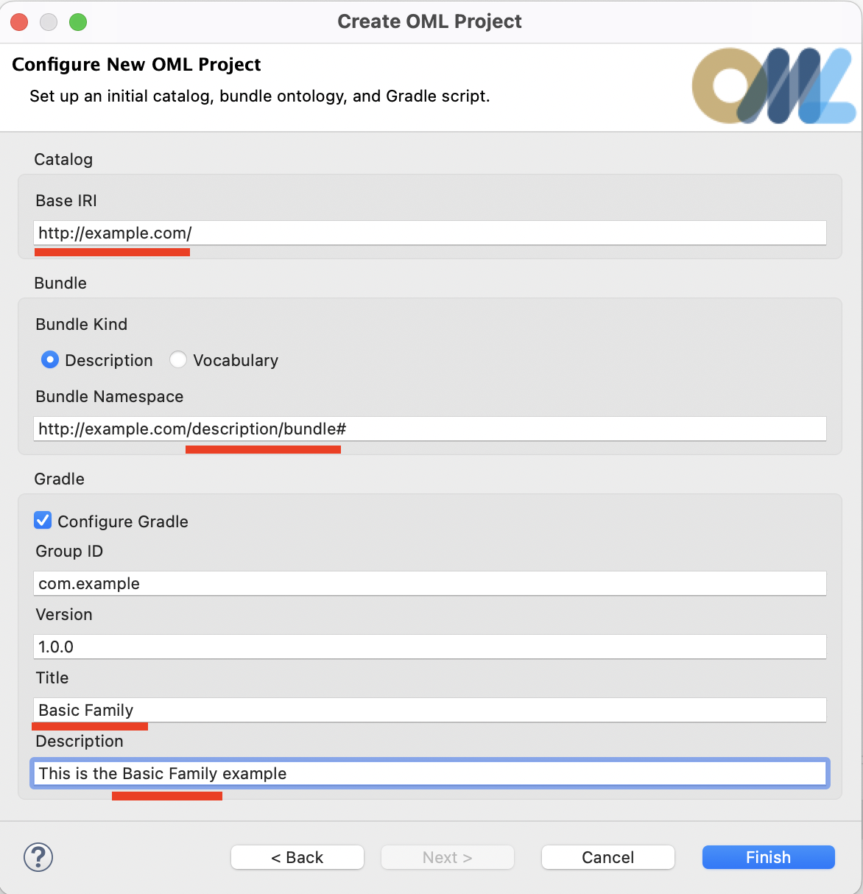
-
The
basicfamily-modelproject should now be visible in the Model Explorer view. -
Expand the
basicfamily-modelproject node in the Model Explorer view as shown in the image below.
5.3. Create OML Vocabulary
In the step, we will create a vocabulary called basicfamily, which is the OML equivalent of an Ecore metamodel that is published as an example with the Sirius framework. Unlike in previous tutorials, we will use the built-in Sirius-based OML vocabulary diagram editor.
-
Right click on the
src/oml/example.comsubfolder in the Model Explorer view and select New -> OML Model. -
Enter the details of the
basicfamilyvocabulary as shown below. Press Finish.
-
The
basicfamilyvocabulary will be created and its OML editor opens.
Before we can use any Sirius-based viewpoints, we need to convert the project to what Sirius calls a
Modeling Project.
-
Right-click on the
basicfamily-modelproject in the Model Explorer view and select "Configure -> Convert to Modeling Project".
Before we can use the built-in Vocabulary viewpoint, which provides the vocabulary diagram editor, we need to enable the viewpoint on the project.
-
Right-click on the on the
basicfamily-modelproject in the Model Explorer view and select "Viewpoints Selection". -
Check the "Vocabularies" box and click OK. This activates the ability to create vocabulary diagrams in the project.
Now, we are ready to create a vocabulary diagram for
basicfamilyvocabulary to use it as an alternative editor to the OML text editor.
-
Navigate to the
basicfamily.omlfile in the Model Explorer view and expand it to show the root vocabulary element. Right-click on the element and select "New Representation -> Basicfamily Editor". -
The New Vocabulary Editor dialog opens up to allow you to customize the diagram name. In this case, we will keep the default name and click OK.
-
In order to observe how the graphical syntax is synchronized with the textual syntax, drag the diagram editor using its title bar and dock it to the right of the text editor.
-
We will now use the Vocabulary diagram editor to author the vocabulary. Follow the steps in the video below and save the editor regularly to see the corresponding textual syntax.
-
If you have done the visual authoring all correct, you should end up with the following OML text in
basicfamily.oml.
Note: that the order of the statements below may be slightly different for you if you created the diagram elements in different order from the video.
vocabulary < http : //example.com/vocabulary/basicfamily#> as basicfamily { extends < http : //www.w3.org/2001/XMLSchema#> as xsd aspect Named scalar property name [ domain Named range xsd : string functional ] concept Family < Named concept Person < Named [ restricts parents to max 2 ] relation members [ from Family to Person ] concept Man < Person concept Woman < Person relation parents [ from Person to Person reverse children ] relation mother [ from Person to Woman functional ] relation father [ from Person to Man functional ] }
Notice that the vocabulary diagram editor does not yet have feature parity with the textual editor in terms of its ability to author the full OML syntax. However, we intend to make incremental progress towards this goal with every release (if you want us to prioritize this, let us know). On the other hand, the editor’s visualization capabilities are more complete. Since the textual and diagram editors are always in sync, a modeler could easily switch back and forth between them to edit the vocabulary.
-
In the OML textual editor for
basicfamily.oml, add specialization from relationsmotherandfatherto relationparents.
relation mother [ from Person to Woman functional ] < parents relation father [ from Person to Man functional ] < parents
Finally, we want to create an OML vocabulary bundle that includes the
basicfamilyvocabulary.
-
The
basicfamilyvocabulary diagram now looks like this (notice the{subsets parents}on relationmotherandfather). -
Right-click on the
src/oml/example.com/vocabularyfolder in Model Explorer view and select New -> OML Model. Fill in the diagram like in the picture. Click Finish. -
In the open editor for
bundle.oml, add an include statement forbasicfamilylike this:
vocabulary bundle < http : //example.com/vocabulary/bundle#> as ^bundle { includes < http : //example.com/vocabulary/basicfamily#> }
Note: Recall that a vocabulary bundle automatically asserts disjointness between included concepts with no common subtypes.
5.4. Create OML Description
In this step, we will create an OML description model using the OML textual editor, then visualize it with the built-on OML description diagram.
Compared with the built-in vocabulary diagram which has authoring capabilities, th built-in OML description diagram only has visualization abilities (so far).
-
Right click on the
src/oml/example.com/descriptionsubfolder in the Model Explorer view and select New -> OML Model. -
Enter the details of the
family1description as shown below. Press Finish. -
The
basicfamilyvocabulary will be created and its OML editor opens.
We will now use the text editor to create an OML description model defining
family1, its men and women members, and their interrelationships.
-
Copy the following OML text and paste it as the new content of the open editor.
description < http : //example.com/description/family1#> as family1 { uses < http : //example.com/vocabulary/basicfamily#> as basicfamily instance family1 : basicfamily : Family [ basicfamily : members Paul basicfamily : members Isa basicfamily : members Elias basicfamily : members Lea basicfamily : members Dave basicfamily : members Alain basicfamily : members Bryan basicfamily : members Fiona basicfamily : members Katell basicfamily : members Clara basicfamily : members Albert basicfamily : members Jane basicfamily : members Peter ] instance Paul : basicfamily : Man instance Isa : basicfamily : Woman instance Elias : basicfamily : Man [ basicfamily : father Paul basicfamily : mother Isa ] instance Lea : basicfamily : Woman [ basicfamily : father Paul basicfamily : mother Isa ] instance Dave : basicfamily : Man [ basicfamily : father Elias ] instance Alain : basicfamily : Man [ basicfamily : father Dave basicfamily : mother Katell ] instance Bryan : basicfamily : Man [ basicfamily : father Elias ] instance Fiona : basicfamily : Woman [ basicfamily : father Elias ] instance Katell : basicfamily : Woman instance Clara : basicfamily : Woman [ basicfamily : father Elias ] instance Albert : basicfamily : Man instance Jane : basicfamily : Woman [ basicfamily : mother Fiona ] instance Peter : basicfamily : Man [ basicfamily : mother Clara ] }
We will now visualize the
family1.omlmodel using the built-in Sirius-based description diagram.
-
Right-click on the
basicfamily-modelproject in the Model Explorer view and select "Viewpoints Selection". In the dialog, check the "Descriptions" box and click OK.
Now, we are ready to create a description diagram for
family1.oml.
-
Navigate to
family1.omlin the Model Explorer view and expand it to reveal the root description. Right-click on the description and select "New Representation -> Family1 Viewer". In the opened dialog, leave the default name and click OK.
The
Family1 Viewerdiagram opens with visualization of the model content. You will notice that the diagram is a bit busy since thefamily1instance, which is related to all family members using themembersrelation is visualized. Deleting this node from the diagram and rearranging the remaining nodes improves the layout.
-
Follow the few steps in the video below to improve the layout of the diagram.
-
The final diagram should look like this now.
Notice that although the diagram looks reasonable is still hard to read. Also, while you can make notational/stylistic changes to the diagram, you cannot use it to edit the description model. In the next section, we will develop a custom diagram to improve both aspects.
Finally, we want to add the
family1description to the description bundle and make the latter use thebasicfamilyvocabulary.
-
Navigate in Model Explorer view to the
src/oml/example.com/description/bundle.omlfile and double click it to open its OML textual editor. -
In the open editor for
bundle.oml, replace the contents with the following. Save the editor.
Note: Recall that a description bundle represents a closed dataset that we want to reason on.description bundle < http : //example.com/description/bundle#> as ^bundle { uses < http : //example.com/vocabulary/basicfamily#> includes < http : //example.com/description/family1#> }
5.5. Create Sirius Viewpoint Project
In this step, we will use Sirius to develop a custom diagram for the basicfamily vocabulary that a) improves the notation/style, and b) allows for editing the description model. In order to do this in Sirius, we need to define what Sirius calls a Viewpoint Specification Project.
-
In the Model Explorer view, right click on an empty area and choose New -> Project -> Sirius -> Viewpoint Specification Project.
-
Give the project the name
basicfamily-viewpointand click Next. -
In the Viewpoint Specification Model page, rename the model to simply
basicfamily.odesignthen click Finish.
The project shows up in the Model Explorer view and its editor opens up.
-
Drag and dock it to the right of the working area. Your screen should now look like this.
-
In the odesign editor, expand the tree to reveal a viewpoint node called
MyViewpoint. Select it and then in the Property Sheet view, rename it topersons. Also set the "Model File Extension" field tooml. -
Under the
personsnode, you see another node for a Java service. Select it and edit it its text todefaultpackage.Services.
This step is only needed since we chose the name of the project to be
basicfamily-viewpoint, which contains an invalid Java character-. Eclipse could not use that name for the root package and instead named itdefaultpackage.
-
Double click the
defaultpackage.Servicesnode in the tree. It should open a Java editor for the Services class. This is how you know you have configured this correctly. Close the Java editor.
We will add a few more Java services from the openCAESAR public API.
-
Navigate in the Model Explorer view to the file
basicfamily-viewpoint/META-INF/MANIFEST.MFand double click on it. In the open editor, switch to theDependenciestab. Click the Add button. In the Plug-in Selection dialog, search foromland select theio.opencaesar.omlitem and click Add. -
Click the Add button again in the
Dependenciestab and in the dialog search forrosettaand select theio.opencaesar.rosetta.sirius.viewpointitem and click Add. Save theMANIFEST.MFeditor and close it. -
Back in the odesign editor, right click on the
defaultpackage.Servicesnode and select Copy. Then, right click on theperson1node, and select Paste. Repeat the paste a total of 4 times. Now, click on each of the pasted services and edit them in the Property Sheet view to the following class names. Save the editor after.
-
io.opencaesar.oml.util.OmlRead
-
io.opencaesar.oml.util.OmlSearch
-
io.opencaesar.oml.util.OmlDelete
-
io.opencaesar.rosetta.sirius.viewpoint.OmlServices
We need to copy some icons to the
basicfamily-viewpointproject, so we use them in the definition of the viewpoint.
-
Download icons.zip and unzip it. Move the
iconsfolder to the root of thebasicfamily-viewpointproject.
Finally, we need to activate the new
personsviewpoint on thebasicfamily-modelproject.
-
Right click on the
basicfamily-modelproject in the Model Explorer view and select Viewpoint Selection. Check thepersonsbox in the dialog and click OK.
Now, all the editors we will define in the
personsviewpoint can be used in thebasicfamily-modelproject.
5.6. Create Diagram Editor
In this step, we will define a custom diagram editor for OML description models that use the basicfamily OML vocabulary.
-
In the
basicfamily.odesigneditor, right click on thepersonsviewpoint and select New Representation -> Diagram Description. -
Select the newly created diagram node in the editor then click on the Property Sheet view to edit its properties. Switch first on the Metamodels tab, click on
Add from registrybutton (on the right), typeomlin the edit box, and select thehttp://opencaesar.io/omlitem and click OK.
Now, we will specify that this diagram can be created for a
oml.ConceptInstancethat is typed by thebasicfamily:Familyconcept from the vocabulary.
-
In the Property Sheet view, switch to the General tab and make the following modifications:
General: - Id: Persons diagram - Domain Class: oml.ConceptInstance - Precondition Expression: aql:self.findIsKindOf('basicfamily:Family')
We will now create two kinds of nodes within the diagram, one for a Man and one for a Woman (the two kind of Person from the vocabulary).
-
In the
basicfamily.odesigneditor, expand thePersons diagramnode to reveal theDefaultnode. Right click on that node and select New Diagram Element -> Node. In the Property Sheet, enter the following information for the node:General: - Id: ManNode - Domain Class: oml.ConceptInstance - Precondition Expression: aql:self.findIsKindOf('basicfamily:Family') Advanced: - Precondition Expression: aql:self.findIsKindOf('basicfamily:Man') -
In the
basicfamily.odesigneditor, right click on theManNodenode and select New Style -> Workspace Image. In the Property Sheet, change the following:General: - Image Path: /basicfamily-viewpoint/icons/man.svg Label: - Show Icon: false - Label Position: border Corner: - Arc Height: 1 - Arc Width: 1 Advanced: - Size Computation Expression: 4
-
In the
basicfamily.odesigneditor, right click on theManNodenode and select Copy. Select theDefaultnode, right click and select Paste. In the Property Sheet, change the following information only:General: - Id: WomanNode Advanced - Precondition Expression: aql:self.findIsKindOf('basicfamily:Woman')
We will now create two kinds of edges within the diagram, one for the
basicfamily:fatherrelation and one for abasicfamily:motherrelation (from the vocabulary).
-
In the
basicfamily.odesigneditor, right click on theDefaultnode and select New Diagram Element -> Relation Based Edge. In the Property Sheet, change the following:General: - Id: FatherEdge - Source Mapping: ManNode, WomanNode - Target Mapping: ManNode - Target Finder Expression: aql:self.findTargetInstances('basicfamily:father') -
In the
basicfamily.odesigneditor, expand thefatherEdgenode and select the nested Edge Style node. In the Property Sheet, change the following:Color: - Stroke Color: blue
-
In the
basicfamily.odesigneditor, right click on thefatherEdgenode and select Copy. Select theDefaultnode, right click and select Paste. In the Property Sheet, change the following information only:General: - Id: MotherEdge - Target Mapping: WomanNode - Target Finder Expression: aql:self.findTargetInstances('basicfamily:mother') -
In the
basicfamily.odesigneditor, expand themotherEdgenode and select the nested Edge Style node. In the Property Sheet, change the following:Color: - Stroke Color: purple
Save the
basicfamily.odesigneditor. Now, we will create an instance of this diagram editor in the description model.
-
In the Model Explorer view, navigate to the file
basicfamily-model/src/oml/example.com/description/family1.oml. Expand the file’s node to reveal the rootdescriptionnode. Right click the nestedfamily1node and select New Representation -> new Persons diagram. Rename the diagram toPersons diagram. Click OK. -
The new diagram editor opens. Drag it and dock it to the right editor stack. It should look like this:
When compared to the built-in description diagram, the new custom diagram is much more concise and readable. So far, this is a viewer only, now we will turn it into an editor. We will start by adding tools to create Man and Woman nodes.
-
In the
basicfamily.odesigneditor, right click on theDefaultnode and select New Tool -> Section. In the property sheet, change the following:General: - Id: Tools
-
Right click on the
Toolsnode and select New Element Creation -> Node Creation. In the property sheet, change the following:General: - Id: createMan - Label: Man - Node Mapping: ManNode Advanced: - Icon Path: /basicfamily-viewpoint/icons/man.gif
-
Expand the
Node Creation Mannode and right click on the nestedcontainernode and select New Variable -> Expression Variable. In the property sheet, change the following:General: - Name: context - Label: aql:container.getDescription()
-
Copy the
contextvariable and paste it under the samecontainervariable. In the property sheet, change the following:General: - Name: containerInstance - Label: aql:container.oclAsType(oml::ConceptInstance)
-
Right click on the nested
Beginnode, select New Operation -> Change Context. In the property sheet, change the following:General: - Browse Expression: aql:context.createConceptInstance('basicfamily:Man', containerInstance, 'basicfamily:members') -
Right click on the new
Change Context...node, select New Operation -> Set. In the property sheet, change the following:General: - Feature Name: name - Value Expression: aql:context.getNewMemberName('man') -
Copy the
Node Creation Mannode and paste it in theSection Toolsnode. In the property sheet, change the following:General: - Id: createWoman - Label: Woman - Node Mapping: WomanNode Advanced: - Icon Path: /basicfamily-viewpoint/icons/woman.gif
-
Expand the
Node Creation Womannode and select the nestedChange Context...node. In the property sheet, change the following:General: - Browse Expression: aql:context.createConceptInstance('basicfamily:Woman', containerInstance, 'basicfamily:members') -
Select the nested
Setnode. In the property sheet, change the following:General: - Value Expression: aql:context.getNewMemberName('woman')
Now, we will add tools to create Father and Mother edges.
-
Right click on the
Toolsnode and select New Element Creation -> Edge Creation. In the property sheet, change the following:General: - Id: createFather - Label: Father - Edge Mapping: FatherEdge Advanced: - Icon Path: /basicfamily-viewpoint/icons/father.png
-
Expand the
Edge Creation Fathernode and right click on the nestedsourcenode and select New Variable -> Expression Variable. In the property sheet, change the following:General: - Name: context - Label: aql:container.getDescription()
-
Copy the
contextvariable and paste it under thesourcevariable. In the property sheet, change the following:General: - Name: sourceInstance - Label: aql:source.oclAsType(oml::ConceptInstance)
-
Copy the
sourceInstancevariable and paste it under thetargetvariable. In the property sheet, change the following:General: - Name: targetInstance - Label: aql:target.oclAsType(oml::ConceptInstance)
-
Right click on the
Beginnode of the tool and select New Operation -> Change Context. In the property sheet, change the following:General: - Browse Expression: aql:context.addPropertyValue(sourceInstance, 'basicfamily:father', targetInstance)
-
Copy the
Edge Creation Fatehrnode and paste it under theToolsnode. In the property sheet, change the following:General: - Id: createMother - Label: Mother - Edge Mapping: MotherEdge Advanced: - Icon Path: /basicfamily-viewpoint/icons/mother.png
-
Navigate to the nested
Begin->Change Context...node. In the property sheet, change the following:General: - Browse Expression: aql:context.addPropertyValue(sourceInstance, 'basicfamily:mother', targetInstance)
Now that we created four create tools, we will create a couple of delete (from model) tools.
The first is
Recursivedelete, which when run on an instance, it deletes the instance and recursively its links (e.g., deleting a Man instance deletes its incoming and outgoing father and mother links).
-
Right click on the
Section Toolsnode and select New Element Edition -> Delete Element. In the property sheet, change the following:General: - Id: Recursive - Mappings: ManNode, WomanNode, FatherEdge, MotherEdge
-
Expand the
Delete Element Recursivenode, right click on theBeginnode and select New Operation -> Change Context. In the property sheet, change the following:General: - Browse Expression: aql:self.recursiveDelete()
The second is
Cascadedelete, which when run on an instance, it deletes the instance, its links, and its related instances based on cascade delete rules. For example, when deleting aManorWomaninstance, we can configure it to cascade the delete to their children recursively.
-
Right click on the
Section Toolsnode and select New Menu -> Operation Action. In the property sheet, change the following:General: - Id: Cascade Delete - Precondition: ManNode, WomanNode, FatherEdge, MotherEdge
-
Expand the
Operation Action Cascade Deletenode, right click on theBeginnode and select New Operation -> Change Context. In the property sheet, change the following:General: - Browse Expression: aql:self.recursiveDelete()
The
recursiveDeletefunction used in the expression is not provided by the openCAEASR API. Instead, we need to implement it as a service in the viewpoint project itself.
-
In the
basicfamily.odesigneditor, double click on thedefaultpackage.Servicesnode. This opens a Java editor for the Services class. Replace the content by the following. Save the editor after.
package defaultpackage ; import java.util.ArrayList ; import java.util.HashSet ; import io.opencaesar.oml.NamedInstance ; import io.opencaesar.oml.Relation ; import io.opencaesar.oml.util.OmlDelete ; import io.opencaesar.oml.util.OmlDelete.CascadeDirection ; import io.opencaesar.oml.util.OmlDelete.CascadeRule ; import io.opencaesar.oml.util.OmlRead ; import io.opencaesar.rosetta.sirius.viewpoint.OmlServices ; public class Services { public void cascadeDelete ( NamedInstance instance ) { var cascadeRules = new ArrayList < CascadeRule > (); Relation parents = ( Relation ) OmlRead . getMemberByAbbreviatedIri ( instance . getOntology (), "basicfamily:parents" ); cascadeRules . add ( new CascadeRule ( CascadeDirection . TARGET_TO_SOURCE , null , parents , null , "delete children" )); var result = OmlDelete . cascadeDelete ( instance , cascadeRules ); OmlDelete . recursiveDelete ( result ); } }
Now that we created the tools, we can use them on the
family1diagram.
-
In the
family1diagram, click the palette arrow on the right-hand-side to reveal the node/edge creation tools. Then use the tools to create amanand awomanthat are father and mother of anotherman.
-
Save the diagram and inspect the
family1.omlfile with the OML text editor. It should have the following at the end:
instance man : basicfamily : Man instance woman : basicfamily : Woman instance man1 : basicfamily : Man [ basicfamily : father man basicfamily : mother woman ]
-
Select the family1 diagram editor again, and from the main menu run Undo a few times until the new changes are all undone. Save the editor. Look at the
family1.omltext editor and observe how the new statements got deleted.
Now, we will try the delete tools.
-
In the
family1diagram, selectPauland from the diagram’s toolbar select the Delete from Model button. This invokes the Recursive delete tool. After this, undo the delete.
-
Select
Paulagain and this time right click on it and select Cascade Delete action in the menu. This invokes the Cascade delete tool where it deletes Paul and his offspring. Aftr this, undo the delete. Save the editor.
5.7. Create Table Editor
In this step, we will define a custom table editor for OML description models that use the basicfamily OML vocabulary.
-
In the
basicfamily.odesigneditor, right click on thepersonsviewpoint and select New Representation -> Edition Table Description. In the Property Sheet, change the following information:General: - Id: Persons table - Domain Class: oml.ConceptInstance Metamodels: - Click
Add from registryand selecthttp://opencaesar.io/oml. Advanced: - Precondition Expression: aql:self.findIsKindOf('basicfamily:Family')
Similar to the custom diagram, this enables the custom table to be createable on concept instances of type
basicfamily:Family. Next, we creat a Line (Row) in the table.
-
Right click on the
Persons tablenode and select New Table Element -> Line. In the Property Sheet, change the following:General: - Id: PersonLine - Domain Class: oml.ConceptInstance - Semantic Candidates Expression: aql:self.findTargetInstances('basicfamily:members') Label: - Header Label Expression: feature:name -
Right click on the
PersonLinenode and select New Style -> Foreground. In the property sheet, change the following:Label: - Label Size: 11
-
Right click on the
Persons tablenode and select New Table Element -> Feature Column. In the property sheet, change the following:General: - Id: FatherColumn - Feature Name: name Label: - Header Label Expression: Father Advanced: - Feature Parent Expression: aql:self.findTargetInstance('basicfamily:father') -
Right click on the
Persons tablenode and select New Table Element -> Feature Column. In the property sheet, change the following:General: - Id: MotherColumn - Feature Name: name Label: - Header Label Expression: Mother Advanced: - Feature Parent Expression: aql:self.findTargetInstance('basicfamily:mother') -
Right click on the
Persons tablenode and select New Table Element -> Feature Column. In the property sheet, change the following:General: - Id: ChildrenColumn - Feature Name: * Label: - Header Label Expression: Children - Label Expression: aql:self.findTargetInstances('basicfamily:children')->size() -
Right click on the
Persons tablenode and select New Table Element -> Feature Column. In the property sheet, change the following:General: - Id: SiblingsColumn - Feature Name: * Label: - Header Label Expression: Siblings - Label Expression: aql:self.calculateSiblingsCount()
This last label expression is not a standard API from openCAESAR, but rather a custom Java function in
basicfamily-viewpointproject.
-
In
basicfamily.odesigneditor, double click ondefaultpackage.Servicesnode. This opens a Java editor forServicesclass. Add the following function to the class:
public int calculateSiblingsCount ( NamedInstance self ) { var siblings = new HashSet <> (); var parents = OmlServices . findTargetInstances ( self , "basicfamily:parents" ); for ( var parent : parents ) { siblings . addAll ( OmlServices . findTargetInstances ( parent , "basicfamily:children" )); } siblings . remove ( self ); return siblings . size (); }
Now, we are not ready to create an instance of the table for the
family1instance.
-
In the Model Explorer view, navigate to the file
basicfamily-model/src/oml/example.com/description/family1.oml. Expand the file’s node to reveal the rootdescriptionnode. Right click the nestedfamily1node and select New Representation -> new Persons table. Rename the diagram toPersons table. Click OK. -
The new table editor opens. Drag it and dock it to the right editor stack while docking the diagram to the left stack. Compare the info presented in both the table and the diagram to verify they are in sync.
So far, this table is a viewer only, now we will turn it into an editor. We will start by adding tools to create Man and Woman nodes.
-
In the
basicfamily.odesigneditor, right click on thePersons tablenode and select New Tool -> Create Line Tool. In the property sheet, change the following:General: - Id: createManLine - Label: New Man - Mapping: PersonLine
Expand the
New Mannode to reveal the variable nodes.
-
Right click on the
rootvariable and select New Variable -> Expression Variable. In the property sheet, change the following:General: - Name: context - Computation Expression: aql:root.getDescription()
-
Right click on the
rootvariable and select New Variable -> Expression Variable. In the property sheet, change the following:General: - Name: containerInstance - Computation Expression: aql:root.oclAsType(oml::ConceptInstance)
-
Right click on the
New Mannode and select New Operation -> Change Context. In the property sheet, change the following:General: - Browse Expression: containerInstance
-
Right click on the last
Change Contextnode and select New Operation -> Set. In the property sheet, change the following:General: - Feature Name: name - Value Expression: aql:context.getNewMemberName('man') -
Copy the
New Mannode and paste it under thePersons tablenode. In the property sheet, change the following:General: - Id: createWomanLine - Label: New Woman - Mapping: PersonLine
-
Expand the
New Womannode and navigate to the nestedChange Contextnode. In the property sheet, change the following:General: - Value Expression: aql:context.createConceptInstance('basicfamily:Woman', containerInstance, 'basicfamily:members') -
Navigate to the nested
Setnode. In the property sheet, change the following:General: - Value Expression: aql:context.getNewMemberName('woman')
We will now add a Delete tool
-
Right click on the
PersonsLinenode and select New Tool -> Delete Line Tool. In the property sheet, change the following:General: - Id: Delete
-
Right click on the
Deletenode and select New Operation -> Change Context. In the property sheet, change the following:General: - Browse Expression: aql:self.recursiveDelete()
Now, let us use these tools to add and delete persons from the table and observe the diagram in the same time.
-
In the
Persons table, right click on any row and select from the popup menu New Man. Notice that a new row gets added to the end of the table and on the diagram in the same time. Repeat the step creating a New Woman this time. Finally select both new rows, right click and choose Delete Line.
-
Similarly, in the
Persons diagram, use the pallette tools to create a man and a woman. Observe how the table stays in sync and shows new rows. Then, use the delete tool on the diagram to delete them and observe them being deleted from the table. Save the editor after.
5.8. Create SPARQL Queries
In this step, we will add a couple of SPARQL queries to the basicfamily-model project to explore how OML has powerful query and reasoning capabilities. One of the queries is meant to replicate the sibling relation in the table above. The other queries for a cousin relation in a couple of ways.
-
In the Model Explorer view, navigate to
basicfamily-model/srcfolder, right click and choose New -> Folder, and name itsparql. -
Right click on the
sparqlfolder and choose New -> File, and name itsiblings.sparql. Click Finish. A text editor opens up. -
In the
siblings.sparqleditor, copy/paste the following SPARQL code. Save the editor.
PREFIX basicfamily : <http://example.com/vocabulary/basicfamily#> SELECT DISTINCT ?person ( COUNT ( ?sibling ) as ?siblings ) WHERE { ?person a basicfamily : Person . OPTIONAL { ?person basicfamily : parents ?parent . ?parent basicfamily : children ?sibling . FILTER ( ?person != ?sibling ) } } GROUP BY ?person ?parent ORDER BY ?person
-
Click in the Gradle Task view and double click on the task
basicfamily-model/oml/owlQuery. Execution runs in the Gradle Executions view. -
Inspect the results by navigating in the Model Explorer view to the
basicfamily-model/buildfolder. Right click on it and select Refresh. Navigate to thebasicfamily-model/build/results/silblings.jsonfile. Double-click to open it. You should see the following result:
{ "head" : { "vars" : [ "person" , "siblings" ] } , "results" : { "bindings" : [ { "person" : { "type" : "uri" , "value" : "http://example.com/description/family1#Alain" } , "siblings" : { "type" : "literal" , "datatype" : "http://www.w3.org/2001/XMLSchema#integer" , "value" : "0" } } , { "person" : { "type" : "uri" , "value" : "http://example.com/description/family1#Albert" } , "siblings" : { "type" : "literal" , "datatype" : "http://www.w3.org/2001/XMLSchema#integer" , "value" : "0" } } , { "person" : { "type" : "uri" , "value" : "http://example.com/description/family1#Bryan" } , "siblings" : { "type" : "literal" , "datatype" : "http://www.w3.org/2001/XMLSchema#integer" , "value" : "3" } } , { "person" : { "type" : "uri" , "value" : "http://example.com/description/family1#Clara" } , "siblings" : { "type" : "literal" , "datatype" : "http://www.w3.org/2001/XMLSchema#integer" , "value" : "3" } } , { "person" : { "type" : "uri" , "value" : "http://example.com/description/family1#Dave" } , "siblings" : { "type" : "literal" , "datatype" : "http://www.w3.org/2001/XMLSchema#integer" , "value" : "3" } } , { "person" : { "type" : "uri" , "value" : "http://example.com/description/family1#Elias" } , "siblings" : { "type" : "literal" , "datatype" : "http://www.w3.org/2001/XMLSchema#integer" , "value" : "1" } } , { "person" : { "type" : "uri" , "value" : "http://example.com/description/family1#Fiona" } , "siblings" : { "type" : "literal" , "datatype" : "http://www.w3.org/2001/XMLSchema#integer" , "value" : "3" } } , { "person" : { "type" : "uri" , "value" : "http://example.com/description/family1#Isa" } , "siblings" : { "type" : "literal" , "datatype" : "http://www.w3.org/2001/XMLSchema#integer" , "value" : "0" } } , { "person" : { "type" : "uri" , "value" : "http://example.com/description/family1#Jane" } , "siblings" : { "type" : "literal" , "datatype" : "http://www.w3.org/2001/XMLSchema#integer" , "value" : "0" } } , { "person" : { "type" : "uri" , "value" : "http://example.com/description/family1#Katell" } , "siblings" : { "type" : "literal" , "datatype" : "http://www.w3.org/2001/XMLSchema#integer" , "value" : "0" } } , { "person" : { "type" : "uri" , "value" : "http://example.com/description/family1#Lea" } , "siblings" : { "type" : "literal" , "datatype" : "http://www.w3.org/2001/XMLSchema#integer" , "value" : "1" } } , { "person" : { "type" : "uri" , "value" : "http://example.com/description/family1#Paul" } , "siblings" : { "type" : "literal" , "datatype" : "http://www.w3.org/2001/XMLSchema#integer" , "value" : "0" } } , { "person" : { "type" : "uri" , "value" : "http://example.com/description/family1#Peter" } , "siblings" : { "type" : "literal" , "datatype" : "http://www.w3.org/2001/XMLSchema#integer" , "value" : "0" } } ] } }
Compare this result to the one we got previously in the
Persons table. It should be the same.
-
In the Model Explorer view, right click on the
sparqlfolder and choose New -> File, and name itcousins.sparql. Click Finish. A text editor opens up. -
In the
cousins.sparqleditor, copy/paste the following SPARQL code. Save the editor.
PREFIX basicfamily : <http://example.com/vocabulary/basicfamily#> SELECT DISTINCT ?person ( COUNT ( ?cousin ) as ?cousins ) WHERE { ?person a basicfamily : Person . OPTIONAL { ?person basicfamily : parents ?parent . ?parent basicfamily : parents ?grandparent . ?grandparent basicfamily : children ?uncleOrAunt . ?uncleOrAunt basicfamily : children ?cousin . FILTER ( ?uncleOrAunt != ?parent ) } } GROUP BY ?person ORDER BY ?person
-
Click in the Gradle Task view and double click on the task
basicfamily-model/oml/owlQuery. Execution runs in the Gradle Executions view. -
Inspect the results by navigating in the Model Explorer view to the
basicfamily-model/buildfolder. Right click on it and select Refresh. Navigate to thebasicfamily-model/build/results/cousins.jsonfile. Double-click to open it. You should see the following result:
{ "head" : { "vars" : [ "person" , "cousins" ] } , "results" : { "bindings" : [ { "person" : { "type" : "uri" , "value" : "http://example.com/description/family1#Alain" } , "cousins" : { "type" : "literal" , "datatype" : "http://www.w3.org/2001/XMLSchema#integer" , "value" : "2" } } , { "person" : { "type" : "uri" , "value" : "http://example.com/description/family1#Albert" } , "cousins" : { "type" : "literal" , "datatype" : "http://www.w3.org/2001/XMLSchema#integer" , "value" : "0" } } , { "person" : { "type" : "uri" , "value" : "http://example.com/description/family1#Bryan" } , "cousins" : { "type" : "literal" , "datatype" : "http://www.w3.org/2001/XMLSchema#integer" , "value" : "0" } } , { "person" : { "type" : "uri" , "value" : "http://example.com/description/family1#Clara" } , "cousins" : { "type" : "literal" , "datatype" : "http://www.w3.org/2001/XMLSchema#integer" , "value" : "0" } } , { "person" : { "type" : "uri" , "value" : "http://example.com/description/family1#Dave" } , "cousins" : { "type" : "literal" , "datatype" : "http://www.w3.org/2001/XMLSchema#integer" , "value" : "0" } } , { "person" : { "type" : "uri" , "value" : "http://example.com/description/family1#Elias" } , "cousins" : { "type" : "literal" , "datatype" : "http://www.w3.org/2001/XMLSchema#integer" , "value" : "0" } } , { "person" : { "type" : "uri" , "value" : "http://example.com/description/family1#Fiona" } , "cousins" : { "type" : "literal" , "datatype" : "http://www.w3.org/2001/XMLSchema#integer" , "value" : "0" } } , { "person" : { "type" : "uri" , "value" : "http://example.com/description/family1#Isa" } , "cousins" : { "type" : "literal" , "datatype" : "http://www.w3.org/2001/XMLSchema#integer" , "value" : "0" } } , { "person" : { "type" : "uri" , "value" : "http://example.com/description/family1#Jane" } , "cousins" : { "type" : "literal" , "datatype" : "http://www.w3.org/2001/XMLSchema#integer" , "value" : "2" } } , { "person" : { "type" : "uri" , "value" : "http://example.com/description/family1#Katell" } , "cousins" : { "type" : "literal" , "datatype" : "http://www.w3.org/2001/XMLSchema#integer" , "value" : "0" } } , { "person" : { "type" : "uri" , "value" : "http://example.com/description/family1#Lea" } , "cousins" : { "type" : "literal" , "datatype" : "http://www.w3.org/2001/XMLSchema#integer" , "value" : "0" } } , { "person" : { "type" : "uri" , "value" : "http://example.com/description/family1#Paul" } , "cousins" : { "type" : "literal" , "datatype" : "http://www.w3.org/2001/XMLSchema#integer" , "value" : "0" } } , { "person" : { "type" : "uri" , "value" : "http://example.com/description/family1#Peter" } , "cousins" : { "type" : "literal" , "datatype" : "http://www.w3.org/2001/XMLSchema#integer" , "value" : "2" } } ] } }
-
Verify this result against the info in the
Persons diagram.
Notice that the
cousinrelation is not asserted in the model but is derived by query. This suggests that every query that needs to match cousins would need to incorporate the same derivation logic, which could potentially make them both complex to write and costly to run. Besides, if this relation matters for logical reasoning (e.g., if you want to consider cousins marrying to be inconsistent), then you may want to add it to the vocabulary explicitly but still derive it by a rule.
-
In the Model Explorer view, navigate to
basicfamily-model/src/oml/example.com/vocabulary/basicfamily.omland double click to open it. -
Add the following OML fragment to the end of the
basicfamilyvocabulary (before the closing braces):
relation cousin [ from Person to Person ] rule infer_couson [ parents ( x , y ) & parents ( y , z ) & children ( z , c ) & differentFrom ( c , y ) & children ( c , m ) -> cousin ( x , m ) ]
This basically adds the relation
cousinto the vocabulary and provides a rule (equivalent to the query we saw previously) to infer it when the DL reasoner generate entailments. This makes thecousinaxioms available directly as part of the dataset, which makes querying for them easier (as we will see) and usable by the reasoner when checking consistency. Of course, this comes at the expense of inflating the size of the dataset, which may or may not be a concern.
-
In the Model Explorer view, navigate to
basicfamily-model/src/sparql/cousins.sparqlfile and double click to open it. Replace the contents by:
PREFIX basicfamily : <http://example.com/vocabulary/basicfamily#> SELECT DISTINCT ?person ( COUNT ( ?cousin ) as ?cousins ) WHERE { ?person a basicfamily : Person . OPTIONAL { ?person basicfamily : cousin ?cousin } } GROUP BY ?person ORDER BY ?person
Notice, how the pattern for matching
cousinis now direct (one hop).
-
Click in the Gradle Task view and double click on the task
basicfamily-model/oml/owlQuery. Execution runs in the Gradle Executions view. -
Inspect the results in the
basicfamily-model/build/results/cousins.jsonfile. You should see the following result:
{ "head" : { "vars" : [ "person" , "cousins" ] } , "results" : { "bindings" : [ { "person" : { "type" : "uri" , "value" : "http://example.com/description/family1#Alain" } , "cousins" : { "type" : "literal" , "datatype" : "http://www.w3.org/2001/XMLSchema#integer" , "value" : "0" } } , { "person" : { "type" : "uri" , "value" : "http://example.com/description/family1#Albert" } , "cousins" : { "type" : "literal" , "datatype" : "http://www.w3.org/2001/XMLSchema#integer" , "value" : "0" } } , { "person" : { "type" : "uri" , "value" : "http://example.com/description/family1#Bryan" } , "cousins" : { "type" : "literal" , "datatype" : "http://www.w3.org/2001/XMLSchema#integer" , "value" : "0" } } , { "person" : { "type" : "uri" , "value" : "http://example.com/description/family1#Clara" } , "cousins" : { "type" : "literal" , "datatype" : "http://www.w3.org/2001/XMLSchema#integer" , "value" : "0" } } , { "person" : { "type" : "uri" , "value" : "http://example.com/description/family1#Dave" } , "cousins" : { "type" : "literal" , "datatype" : "http://www.w3.org/2001/XMLSchema#integer" , "value" : "0" } } , { "person" : { "type" : "uri" , "value" : "http://example.com/description/family1#Elias" } , "cousins" : { "type" : "literal" , "datatype" : "http://www.w3.org/2001/XMLSchema#integer" , "value" : "0" } } , { "person" : { "type" : "uri" , "value" : "http://example.com/description/family1#Fiona" } , "cousins" : { "type" : "literal" , "datatype" : "http://www.w3.org/2001/XMLSchema#integer" , "value" : "0" } } , { "person" : { "type" : "uri" , "value" : "http://example.com/description/family1#Isa" } , "cousins" : { "type" : "literal" , "datatype" : "http://www.w3.org/2001/XMLSchema#integer" , "value" : "0" } } , { "person" : { "type" : "uri" , "value" : "http://example.com/description/family1#Jane" } , "cousins" : { "type" : "literal" , "datatype" : "http://www.w3.org/2001/XMLSchema#integer" , "value" : "0" } } , { "person" : { "type" : "uri" , "value" : "http://example.com/description/family1#Katell" } , "cousins" : { "type" : "literal" , "datatype" : "http://www.w3.org/2001/XMLSchema#integer" , "value" : "0" } } , { "person" : { "type" : "uri" , "value" : "http://example.com/description/family1#Lea" } , "cousins" : { "type" : "literal" , "datatype" : "http://www.w3.org/2001/XMLSchema#integer" , "value" : "0" } } , { "person" : { "type" : "uri" , "value" : "http://example.com/description/family1#Paul" } , "cousins" : { "type" : "literal" , "datatype" : "http://www.w3.org/2001/XMLSchema#integer" , "value" : "0" } } , { "person" : { "type" : "uri" , "value" : "http://example.com/description/family1#Peter" } , "cousins" : { "type" : "literal" , "datatype" : "http://www.w3.org/2001/XMLSchema#integer" , "value" : "0" } } ] } }
Opps, this result is unexpected. Why were no cousins found? If you look more closely at the
infer_cousinrule (above) again, you will see that it uses the standarddifferentFrompredicate to ensure that a parent is not matched again as an uncle or an aunt (children of a grandparent). So where is the problem? The problem can be explained by the fact that the vocabulary, as defined, lacks a way to make a person different from another person. Having different names is not by itself sufficient, since a DL reasoner may infer that they are just aliases to the same individual. So how do we fix this? We need to either add akeyaxiom to thePersonaspect to say that one (or more) of its properties should be considered as a unique key. Alternatively, we can configure the DL reason to use theUnique Name Assumptionby turning on theuniqueNamesoption on theowlReasontask in thebuild.gradlescript. Since we demonstrated the use of keys in Tutorial 1 already, we will use the second method here.
-
In the Model Explorer view, navigate to
basicfamily-model/build.gradlefile and double click to open it. Find theowlReasontask and set theuniqueNamesflag totrueas follows:
task owlReason ( type : io . opencaesar . owl . reason . OwlReasonTask , group : "oml" , dependsOn : omlToOwl ) { ... // use unique name assumption uniqueNames = true }
-
Rerun the task
basicfamily-model/oml/owlQueryand inspect the results in thebasicfamily-model/build/results/cousins.jsonfile. You should see the following correct result now:
{ "head" : { "vars" : [ "person" , "cousins" ] } , "results" : { "bindings" : [ { "person" : { "type" : "uri" , "value" : "http://example.com/description/family1#Alain" } , "cousins" : { "type" : "literal" , "datatype" : "http://www.w3.org/2001/XMLSchema#integer" , "value" : "2" } } , { "person" : { "type" : "uri" , "value" : "http://example.com/description/family1#Albert" } , "cousins" : { "type" : "literal" , "datatype" : "http://www.w3.org/2001/XMLSchema#integer" , "value" : "0" } } , { "person" : { "type" : "uri" , "value" : "http://example.com/description/family1#Bryan" } , "cousins" : { "type" : "literal" , "datatype" : "http://www.w3.org/2001/XMLSchema#integer" , "value" : "0" } } , { "person" : { "type" : "uri" , "value" : "http://example.com/description/family1#Clara" } , "cousins" : { "type" : "literal" , "datatype" : "http://www.w3.org/2001/XMLSchema#integer" , "value" : "0" } } , { "person" : { "type" : "uri" , "value" : "http://example.com/description/family1#Dave" } , "cousins" : { "type" : "literal" , "datatype" : "http://www.w3.org/2001/XMLSchema#integer" , "value" : "0" } } , { "person" : { "type" : "uri" , "value" : "http://example.com/description/family1#Elias" } , "cousins" : { "type" : "literal" , "datatype" : "http://www.w3.org/2001/XMLSchema#integer" , "value" : "0" } } , { "person" : { "type" : "uri" , "value" : "http://example.com/description/family1#Fiona" } , "cousins" : { "type" : "literal" , "datatype" : "http://www.w3.org/2001/XMLSchema#integer" , "value" : "0" } } , { "person" : { "type" : "uri" , "value" : "http://example.com/description/family1#Isa" } , "cousins" : { "type" : "literal" , "datatype" : "http://www.w3.org/2001/XMLSchema#integer" , "value" : "0" } } , { "person" : { "type" : "uri" , "value" : "http://example.com/description/family1#Jane" } , "cousins" : { "type" : "literal" , "datatype" : "http://www.w3.org/2001/XMLSchema#integer" , "value" : "2" } } , { "person" : { "type" : "uri" , "value" : "http://example.com/description/family1#Katell" } , "cousins" : { "type" : "literal" , "datatype" : "http://www.w3.org/2001/XMLSchema#integer" , "value" : "0" } } , { "person" : { "type" : "uri" , "value" : "http://example.com/description/family1#Lea" } , "cousins" : { "type" : "literal" , "datatype" : "http://www.w3.org/2001/XMLSchema#integer" , "value" : "0" } } , { "person" : { "type" : "uri" , "value" : "http://example.com/description/family1#Paul" } , "cousins" : { "type" : "literal" , "datatype" : "http://www.w3.org/2001/XMLSchema#integer" , "value" : "0" } } , { "person" : { "type" : "uri" , "value" : "http://example.com/description/family1#Peter" } , "cousins" : { "type" : "literal" , "datatype" : "http://www.w3.org/2001/XMLSchema#integer" , "value" : "2" } } ] } }
5.9. Summary
In this comprehensive tutorial, we’ve delved into some captivating facets of OML. Firstly, while OML’s textual syntax offers a highly convenient means of working with the language, it’s important to note that it’s not the sole method available to OML modelers. OML Rosetta takes the experience a step further by furnishing ready-made graphical views (diagrams) for both authoring and viewing OML models. What’s truly remarkable is that these graphical and textual views remain in perfect harmony, allowing modelers to seamlessly switch between them without missing a beat.
Furthermore, OML Rosetta empowers users with the ability to craft custom views, leveraging the robust Sirius framework. These custom views can encompass diagrams, tables, and more, all designed to enhance the user experience and make it more accessible. Imagine the potential here – not only can this feature be used to create specialized, methodology-specific views that guide users through systematically describing their systems, step by step (akin to the approach we outlined in Tutorial 2), but these views also stay impeccably synchronized since they stem from the same semantic models.
Lastly, we revisited the remarkable analytical capabilities that OML brings to the table. While certain analyses can be effortlessly integrated into the authoring views – as exemplified by our demonstration of computing sibling counts within the table view using the OML Java API – OML’s true power lies in its capacity to infer axioms using OML rules and subsequently query these axioms with SPARQL queries. This not only grants methodologists unparalleled control over vocabulary expressiveness, dataset size, and analysis performance but also opens the door to more intricate and potent analyses. With OML, the potential for robust, insightful modeling and analysis knows no bounds.